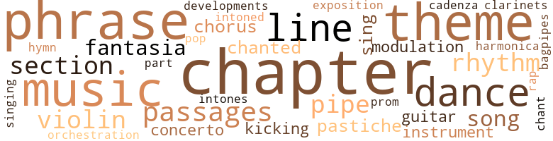
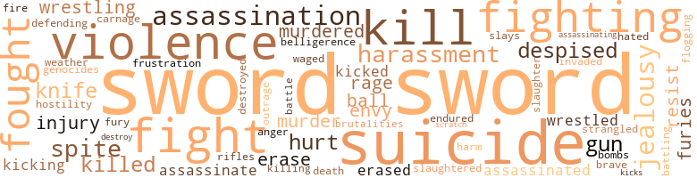
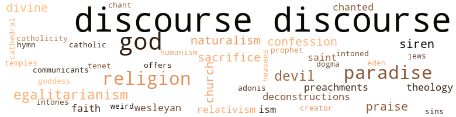

Jewel-Hinged Jaw (The), by Delany, Samuel R. (1977)
167 music-related terms matched in this text.
Most frequent terms in this topic: music (16); chapter (12); phrase (12); themes (10); Chapter (9)
bagpipe.n.01
Definition: a tubular wind instrument; the player blows air into a bag and squeezes it out through the drone
| word | sentence |
|---|---|
| bagpipes | The musicians have come up the road , with drums and clarinets , and hammers rattling on the siduri , and another playing bagpipes made from a goat 's belly . |
cadenza.n.01
Definition: a brilliant solo passage occurring near the end of a piece of music
| word | sentence |
|---|---|
| cadenza | I supplied ( I thought then ) a marvelous cadenza . |
chant.n.01
Definition: a repetitive song in which as many syllables as necessary are assigned to a single tone
| word | sentence |
|---|---|
| chant | By much the same process that poetry expanded beyond its beginnings in ritualistic chant and incantation to become a way to paint all that is human and etch much that is divine , so s-f became able to reflect , focus , and diffract the relations between man and his universe , as it included other men , as it included all that man could create , all he could conceive . |
chapter.n.01
Definition: a subdivision of a written work; usually numbered and titled
| word | sentence |
|---|---|
| chapter | An editor ( or writer ) who suspects ( or even hopes ) he has a book that might approach twenty-five thousand sales - and that 's not tickling the bottom rung on the ladder to best-sellerdom --- would be an idiot to label a book " science fiction , " even if the hero graduated from the Space Academy in the first chapter and squelched the Bug Men of Uranus in the last . |
| chapter | This is perhaps the place to make the point ( made so clearly in chapter three of most standard Glotolog grammars ) , * < ? > |
| Chapter | ( One can get some idea of the flavor of A Reborns from Chapter Eleven of Oscar Wilde 's Picture of Dorian Grey , a pastiche of Huysmans ; the mysterious yellow-backed French novel after which Dorian patterns his life was immediately identified by the Victorian public as A Rebours , which was confirmed by Wilde during the Queensbury trial ; the book had achieved a reputation for decadence and corruption , as sexual oddities were another subject that Huysmans explored with his newly perfected technique . ) |
| chapter | G. $ pencer Brown , in Laws of Form ( Julian Press , 1969 ) , notes as a manifestation of the abstract calculus he is developing ( in a passing argument in chapter 8 , page 42 ) , that the value of a content is reversed by its image ; but to go on to an image of an image gives us a new content to deal with . |
| chapters | The critical temptation with a series is to try to read successive installments as if they were chapters in some particularly loosely-constructed novel . |
| chapters | Almost inevitably , though , they present us with signs that insist , despite other signs of a serial chronology , that , rather than successive chapters , they are really successive approximations of some ideal-but-never - to-be-achieved-or-else-overshot structuring of themes , settings , characters . |
| chapter | The first chapter 's image of time as an arrow ( between " river " and " stone " ) develops into half the controlling metaphor by which we are given ( popularized ) Shevek 's scientific theory during Vea 's party , as well as those theories that speak . |
| Chapter | What works is that image 's resolution in Chapter Eleven , when Shevek is with the Terran Ambassador Keng in the old River Castle in Rodarred , now the Terran Embassy . |
| chapters | What works is the way in which the discussion of the conflicting " Sequency " and " Simultaneity " theories of time reflect the macrostructure of the novel itself , with its ordered , pendulating chapters , crossing time and space which is , by semantic extension , the goal of Shevek 's theory . |
| chapter | At another place , we anticipate a recall and get none : In the first chapter we learn the third person singular is the polite form of address in loti : " Is he sure he did n't get hurt ? " |
| chapters | In the chapters dealing with Annares , there is much concern with sex --- and some with sexuality . |
| Chapter | In Chapter nine , Shevek has sequestered himself in his room in the University of A-io and has gotten to work on his new and important Temporal theory , which will be the basis of the new , interstellar spacedrive . |
| Chapter | Near the beginning of the prison scene in Chapter Two , we read : " The simple lure of perversity brought Terin , Shevek , and three other boys together . |
| Chapter | But two points must be made : If we actually review the text concerning the publication of Shevek 's book , we find that little or none of Takvar 's behavior is a real referent for any of the ideas that , in the passage , just quoted from Chapter Ten , Takvar expresses . |
| Chapter | In Chapter Eight both Takvar and Shevek agreed that , as the Principles is a work of science , it made little difference whose name or names the book came out under . |
| chapter | But even in an Annares chapter , when Shevek , age nineteen , encounters Sabul over the publication of his paper , we find such descriptions of the young physicist facing his older , hostile professor : His gentleness was uncompromising ; because he would not compete for dominance he was indomitable ( p 103/94 ) . |
| Chapter | Toward the end of Chapter Twelve , Shevek 's partner Takvar and their daughter Sadik are being harrassed by their fellow workers because of Shevek 's reputation for wanting to open communication with Urras . |
| chapters | The didactic purpose I sense behind the use of Shevek 's mother Rulag in the closing chapters of the novel is one that I , personally , approve of . |
| chapter | This is the reason that the closing of this chapter remains for me mere melodrama : and that Shevek 's tears obliterate even the hazy image of Rulag I was able to form . |
| chapters | That she has found , in the alternating chapters , an aesthetic form that reflects the technological underpinnings of her tale is admirable . |
| chapters | Indeed , the alternating chapters of The Dispossessed suggests nothing so much as a development on the form so favored by Proust 's near-contemporary , Edgar Rice Burroughs , who employed a somewhat similar alternating chapter format in Tarzan novel after Tarzan novel . |
| chapter | Indeed , the alternating chapters of The Dispossessed suggests nothing so much as a development on the form so favored by Proust 's near-contemporary , Edgar Rice Burroughs , who employed a somewhat similar alternating chapter format in Tarzan novel after Tarzan novel . |
| chapter | In the last chapter , when Shevek is returning to Annares on the intersteller ship Davenant , neither of Urras nor Annares , we read : Very late on the following shipnight , Shevek was in the Davenant 's garden . |
| Chapter | One of the most striking moments of the book is the closing of Chapter Three . |
| chapter | With the evocation of this most charged moonlight complete , the next chapter begins : " The westering sun ... " which is breathtaking --- for we are on another world ( p 81/74 ) . |
| Chapter | An image --- such as the one discussed at the close of Chapter Three --- is not only an image in a chain of images , it is a detonator dropped into a readerly imagination organised to a certain potential of response by previous effects and images --- a response the new image releases . |
| chapter | Re Dhalgren ... I think Marilyn is depressingly right about the psychiatric session with Madame Brown and the Calkins ' interview . . . which means more work ; and after I 've just re-written the whole , last chapter ! |
| chapter | As far as semiological hair-splitting is concerned , we just dispensed with practically a chapter and a half ! |
chorus.n.01
Definition: any utterance produced simultaneously by a group
| word | sentence |
|---|---|
| chorus | From the cassette recorder on the counter , Marinella , echoed by the chorus , asks plaintively again and again : " Pou paome ? |
| chorus | But I still have the opening of the prize-winning play by heart , with only that one morning 's viewing : The curtains had opened and a chorus of Greek women in blue veils walked across the stage , growing light with dawn , reciting : " Persia 's ships to Attica came . |
clarinet.n.01
Definition: a single-reed instrument with a straight tube
| word | sentence |
|---|---|
| clarinets | The musicians have come up the road , with drums and clarinets , and hammers rattling on the siduri , and another playing bagpipes made from a goat 's belly . |
concerto.n.01
Definition: a composition for orchestra and a soloist
| word | sentence |
|---|---|
| concerto | I wrote a violin concerto for him --- it took me four months . |
| concerto | He never saw the concerto . |
dance.n.01
Definition: an artistic form of nonverbal communication
| word | sentence |
|---|---|
| dance | And I suspect one can find analogues of this situation with the novel , the theatre , the dance . |
| dance | And the story teller has the whole theatrical battery , including elements of dance and song , to compel his listeners ' attention . |
| dance | The encounter is so muted , so down-played , so low-key that , though this woman fights for the freedom of the Universe , chaperones the daughter to a dance , takes on an eccentric garage mechanic for a lover , commits murder and makes love on the back porch , the suspicion lingers that perhaps , somehow , it is all a fantasy and not science fiction at all . |
| dances | For the monthly school dances , the girls had to stay after classes to decorate the music room . |
| dances | During this time , I heard much talk about the " natural " antipathy of boys to girls , which the school , of course , was constantly trying to fight by the monthly social dances , in which the girls would do all the preparatory work , and the boys , uncomfortable in suits and ties , would sigh and shuffle and try to stay in as tight little groups as possible until , with much urging from the teachers , one or another of us would go up and ask one of the girls seated along the window benches to dance . |
| dances | I think it was at this point Hannah suggested that perhaps two or three more " Sadie Hawkins " dances might help --- which met with groans all around . |
| dance | Besides portraying Shevek at his most believable and human , the sentence takes the signifiers of the book 's major scientific themes and reduces them to a purely abstract and verbal dance , where they strike us as a tiny reflection of the whole object of our consideration , seen far off in a spherical mirror . |
| dances | Costas dances for us , picking the table up in his teeth , his brown hair shaking as his boot heels clatter on the floor , teeth gritting on the wood , and the wine in the glasses shaking too , but none spills . |
dance.v.03
Definition: skip, leap, or move up and down or sideways
| word | sentence |
|---|---|
| dance | During this time , I heard much talk about the " natural " antipathy of boys to girls , which the school , of course , was constantly trying to fight by the monthly social dances , in which the girls would do all the preparatory work , and the boys , uncomfortable in suits and ties , would sigh and shuffle and try to stay in as tight little groups as possible until , with much urging from the teachers , one or another of us would go up and ask one of the girls seated along the window benches to dance . |
| dance | Our professional square dance caller the first evening made it clear that girls could ask boys to dance . |
| dance | Except for one " Sadie Hawkins " dance , it was understood that the boys should ask the girls to dance . |
development.n.09
Definition: (music) the section of a composition or movement (especially in sonata form) where the major musical themes are developed and elaborated
| word | sentence |
|---|---|
| developments | I can recommend the book to anyone interested in the recent developments of the practical side of reactors and reactor plants . |
exposition.n.04
Definition: (music) the section of a movement (especially in sonata form) where the major musical themes first occur
| word | sentence |
|---|---|
| exposition | In my second published novel I recall the key sentence in the opening exposition described the lines of communication between two cities as " ... now lost for good . " |
fantasia.n.01
Definition: a musical composition of a free form usually incorporating several familiar themes
| word | sentence |
|---|---|
| fantasia | The s-f writer , whether he is writing about what he thinks could , should or ( heaven help us ) might someday exist , or whether she is dallying with some future fantasia so far away all subjunctive connection with the present is severed , has become entranced with and dedicated herself to the realization of what is not . |
| fantasia | The phrase comes from the opening fantasia on the steps of the Senate where Antony is being murdered while Caesar begs to be assassinated : " Have you an ill omen for me this day ? " |
| fantasias | The two youth hostels here were op art fantasias , one run by a madman who would n't let you use the toilet . |
guitar.n.01
Definition: a stringed instrument usually having six strings; played by strumming or plucking
| word | sentence |
|---|---|
| guitar | Athens : An incredible month in the Plaka , playing guitar in the clubs at the foot of the Acropolis , watching Easter from the roofs of Anaphiotika 's stone houses , at the top of the spiral stairs , while the parishoners gather with their candles at the church to march down through the city saddled between the double hills , as lines of light worm the streets toward the monastery . |
| guitar | In Cleveland : Sitting at the end of the hall of the Sheraton playing the guitar while Roger Z ( at the announcement of his prescence at the convention opening , the standing ovation went on , and on , and on ... ) , crosslegged on the carpet , played the harmonica and the others listened . |
harmonica.n.01
Definition: a small rectangular free-reed instrument having a row of free reeds set back in air holes and played by blowing into the desired hole
| word | sentence |
|---|---|
| harmonica | In Cleveland : Sitting at the end of the hall of the Sheraton playing the guitar while Roger Z ( at the announcement of his prescence at the convention opening , the standing ovation went on , and on , and on ... ) , crosslegged on the carpet , played the harmonica and the others listened . |
hymn.n.01
Definition: a song of praise (to God or to a saint or to a nation)
| word | sentence |
|---|---|
| hymn | " There 's a story by somebody I 've never read anything else by , called Descending , where with nothing more than a shopping list , the author establishes ... " And while I discussed him , Disch , in Mexico , was creating a marvelous and marvelously flawed hymn to the human monster , than to be called The Harvest Is Past : The Summer Is Ended . |
kick.v.04
Definition: kick a leg up
| word | sentence |
|---|---|
| kicking | ( I say living with a talented and temperamental poet is good for a prose writer ; but I suspect living with a talented and temperamental poet who happens to possess a rather acute business sense helps too . . . ) [ Note : Our obstetrician , Mrs. Ransom , says that when the baby presses against an artery in the womb , often a highly regular spasming of part of the uterine wall can occur , easily confusable with the baby 's kicking . |
| kicking | While I looked at it , Alfred came climbing in over the window-sill , dropped to the floor , spilling a few cinders onto the waxed floorboards , and , kicking at them , gave me a great grin : " There , " he said , " Go on ! |
medley.n.01
Definition: a musical composition consisting of a series of songs or other musical pieces from various sources
| word | sentence |
|---|---|
| pastiche | ( One can get some idea of the flavor of A Reborns from Chapter Eleven of Oscar Wilde 's Picture of Dorian Grey , a pastiche of Huysmans ; the mysterious yellow-backed French novel after which Dorian patterns his life was immediately identified by the Victorian public as A Rebours , which was confirmed by Wilde during the Queensbury trial ; the book had achieved a reputation for decadence and corruption , as sexual oddities were another subject that Huysmans explored with his newly perfected technique . ) |
| pastiche | Zelazny 's pastiche of Cordwainer Smith , The Furies , and his forthcoming novel Creatures of Light and Darkness are essentially reductive . |
music.n.01
Definition: an artistic form of auditory communication incorporating instrumental or vocal tones in a structured and continuous manner
| word | sentence |
|---|---|
| music | I feel it is richer in much the same way atonal music is richer than tonal , or abstract painting is richer than realistic . |
| music | No , the apparant " simple-mindedness " of science fiction is not the same as that surface effect through which individual abstract paintings or particular atonal pieces frequently appear " improverished " when compared to " conventional " works , on first exposure ( exposed to , and compared by , those people who have absorbed only the " conversational " textus with which to " read " their art or music ) . |
| music | The web of possibilities is not simple --- for either abstract painting , atonal music , or science fiction . |
| music | or an aesthetic appetite ( hand-dyed smocks , beaded vests . . . ) and going naked when neither necessity nor appetite is present ; or where thousands of such people will gather , in a field three hundred miles from where they live , to hear music from musicians who have come a thousand miles to play it for them ? |
| Music | It begins with an epigraph from Ldvi-Strauss : " Music and mythology confront man with virtual objects whose shadow , alone is real ... " And then this from Quine 's Philosophy of Logic : " The long and short of it is that propositions have been projected as shadows of sentences , if I may transpose a figure of Wittgenstein 's . |
| music | Sunlight streamed through white organdy curtains while the grey haired gentleman sat forward in the armchair , and the rest of us , sitting on the mg and hugging our knees , were bound in the music of his brogue . |
| music | It is listening to an essentially unsung music . |
| music | A few months before I first went to Europe , a young woman music student came knocking on my door , waving a copy of The Magazine of Fantasy and Science Fiction with an absolutely obsessed empression : " Have you read this , Chip ? |
| music | For the monthly school dances , the girls had to stay after classes to decorate the music room . |
| music | We discuss the effect of Romantic music on post - Wagnerian opera . |
| music | My home city , new now this trip , is the slow , blond young man who ran away from his wife in Alabama and who talked and talked and talked for nine days straight with the radio erupting pop music that became translated under the sound of his drawl . |
| music | The correspondences that the music and the mosaic film-clips force from you , each image changing in time to the music , words and music incessently commenting on one another , is exhausting and staggering . |
| music | The correspondences that the music and the mosaic film-clips force from you , each image changing in time to the music , words and music incessently commenting on one another , is exhausting and staggering . |
| music | The correspondences that the music and the mosaic film-clips force from you , each image changing in time to the music , words and music incessently commenting on one another , is exhausting and staggering . |
| music | The music pinions us to the instant . |
| music | ( Note , however : this paragraph does not hold true [ at least in the same way ] for theatrical works , orchestral music , or much electronic art . |
| music | I notice that I often tend to talk ( and think ) about my childhood just as though music had no part in it --- where as , in reality , I must have spent more hours at it from eight to twice eight than at anything else . |
musical_instrument.n.01
Definition: any of various devices or contrivances that can be used to produce musical tones or sounds
| word | sentence |
|---|---|
| instruments | Not to mention your own gravitational field about the instruments you are using to make your measurements . |
| instrument | The critic can only judge these things by her own responses ; in a very real way , the only thing the critic is ever really criticising - and this must be done humbly if it is to be done at all --- is the response of her own critical instrument . |
orchestration.n.01
Definition: an arrangement of a piece of music for performance by an orchestra or band
| word | sentence |
|---|---|
| orchestration | The orchestration of image here is simple and superb . |
part.n.11
Definition: the melody carried by a particular voice or instrument in polyphonic music
| word | sentence |
|---|---|
| part | [ To summarize those differences : Glotolog has no true predicates ( " I feel , " as well as " can be called true , " for example , are the same part of speech as " <D> " ) ; in fact , Glotolog has no true subjects either . |
passage.n.06
Definition: a short section of a musical composition
| word | sentence |
|---|---|
| passages | But from here on , the description of what is unique to science fiction and how it works within the s-f textus that is , itself , embedded in the whole language --- and language-like --- textus of our culture becomes a list of specific passages or sets of passages : better let the reader compile her or his own . |
| passages | The second thing I noticed was that a good deal of the story was chanted - indeed , in the most exciting passages very little was actually happening : And you had sections like : v " . . . they walked across the ice , they slogged across the ice , there was ice below them and ice all around them . |
| passages | This is the personal context against which I read the two scenes the quoted passages come from . |
| passages | The point is , of course , that the naturalness and immutability of such natural and immutable behavior that the two , cited passages ( and Norman 's and Hannah 's argument ) make their implicit appeals to is open to question and analysis . |
| passages | With all this as precursor , we can revise our initial valuation of the first two signs of the four we are discussing : The two scenes in which the passages occur stand as signs that ( among other things ) the behavior on Annares , despite sexual intagration of the professions , is not that egalitarian . |
phrase.n.02
Definition: a short musical passage
| word | sentence |
|---|---|
| phrase | We know the first child called it a Red Squealer out of pure , metonymic apprehension : there were , that evening , among many perceived aspects , " redness " and " squealing , " which , via a sort of morphological path-of-lease-resistence , hooked up in an easily sayable/thinkable phrase . |
| phrase | This last is a particularly interesting case : the signed phrase could also be translated " You flinched ! '' |
| phrase | But it would be a great mistake to try and ' transform ' the original into any of my English translations , either by some Chomskyan method , or by filling in suspected ellipses , understood subjects , and the like : " . . . have want . . . " is a single verb phrase , for example , whose translation I could spend pages on . |
| phrase | The phrase " have need " works by a similar matrix and is regularly imperative . |
| phrases | Here , let me make you a list ... " It was the beginning of a marvellous friendship ( that , a year ago , re flowered just as warmly when I visited Wesleyan University where she is now a professor of Russian ) which quickly came to include nightly hour-plus phone calls , made up mostly of ritual catch phrases ( such as : " What has that got to do with the price of eggs in Afghanistan ! " ) |
| phrase | But if we do not notate the vision accurately , if we accept some phrase we should have discarded , if we allow to stand some sentence that is not as sharp as we can make it , then the vision is not changed in the same way it would have been otherwise : the new sections of the vision will not light up quite so clearly , perhaps not at all . |
| phrase | As well , the movement of the vision --- its action --- will not develop in the same way if we put down a different phrase . |
| phrases | Other writers must pause , pace , and sometimes spend days between each few phrases , abandoning and returning to the visualization a dozen times a page . |
| phrases | Traditional phrases that weigh heavily in the ear , to the eye , are mere cliches . |
| phrase | As much as tone of voice is part of writing , the infinite nuances that various vocal tones can give to a single phrase are totally lost on the page . |
| phrases | When we listen , we want the ideas interlarded with noise --- all those meaningless words and phrases like " essentially , " " practically , " " or the other hand , " " almost , " " seems , " more or less , " " suddenly " --- the words that give us time to think . |
| phrase | The phrase comes from the opening fantasia on the steps of the Senate where Antony is being murdered while Caesar begs to be assassinated : " Have you an ill omen for me this day ? " |
| phrases | And the sentences and phrases in such writing that invoke their objects with particular strength and directness are experienced not as transparent and common but as extraordinary and , in themselves , as ornament . |
| phrase | Their stories were , by comparison , merely museums in which colloquial turns of phrase were preserved - intact , but no longer alive . |
| phrases | We have been shown something , by an ordering of language units --- sentences , anecdotes , turns of phrases , cris des coeurs , intellectual slapstick routines , a barrage of literary and historical allusions , indeed all that , waking , frame this sleep shown what language could not possibly have said with any conviction , much less modesty , though the speaker regaled us from the time we woke till the time , hours later , when sleep itself finally rescued us from the tedium of the discrete , the linear , and the logical . |
| phrase | We note that the phrase " instead of having a gate it degenerated into mere geometry " is mere fatuousness . |
| phrases | But it is the text itself , as we pointed out in our analysis of the first paragraph , that disperses these ghosts --- which is why the phrases , sentences , and ideas that are put in to placate and appease them register as aesthetic failings , or at best as a residue from an unconscious struggle in the author that , while we appreciate it , is inappropriate to the story unless brought consciously forward . |
| phrases | And it is the same uniquely science fictional process of imagistic inmixing , which allows the internal structural modifications to door itself when certain sound-images are brought into syntactic proximity , that also governs --- when certain phrases , sentences , or larger language units are properly positioned in the text --- the external structural modifications around door . |
| phrase | Last week , on a walk at three in the morning , Cumbani saw me sitting in the moonlight on the prow of Andreas ' boat , barefeet shoved beneath the sleeping pelican , singing loudly and tearing pages from my notebook , balling them up and flinging them on the water or on the concrete walk , jumping up to chase a page , retrieve a word or phrase and rescrawl it on another page . |
| phrase | And certainly all writers must work with sound to vary the rhythm of a phrase or sentence , as well as to control the meaning . |
pipe.n.04
Definition: a tubular wind instrument
| word | sentence |
|---|---|
| pipe | Alfred took another draw on his pipe , found it was out , and frowned . |
| pipe | He took another pull on his pipe and , expelling small puffs of smoke , intoned : " Truth . . . Falsity ... Model . |
| pipe | I mean --- " He took his pipe and pointed with the stem toward the window ; his long hair swung --- " if , in here , in the sitting room , you were to make the statement , ' It is raining outside , ' or some other model of the situation you perceive through the glass --- " " Like a drawing ? " or a sculpture , or a photograph ; or a flashing light that , by arrangement , we had both agreed to interpret as , ' It is raining outside , ' or some abstract mark on a piece of paper , or an arbitrary set of musical notes that we had some such similar agreement about --- " " A sign --- " I said . |
| pipe | Alfred stepped directly in front of the window and jabbed his pipe stem at me . |
pop_music.n.01
Definition: music of general appeal to teenagers; a bland watered-down version of rock'n'roll with more rhythm and harmony and an emphasis on romantic love
| word | sentence |
|---|---|
| pop | My home city , new now this trip , is the slow , blond young man who ran away from his wife in Alabama and who talked and talked and talked for nine days straight with the radio erupting pop music that became translated under the sound of his drawl . |
promenade.n.01
Definition: a formal ball held for a school class toward the end of the academic year
| word | sentence |
|---|---|
| prom | At least partially , what most likely make Bedap 's adjustments possible are the very real consolations of promiscuity . |
rap.n.05
Definition: genre of African-American music of the 1980s and 1990s in which rhyming lyrics are chanted to a musical accompaniment; several forms of rap have emerged
| word | sentence |
|---|---|
| rap | We take our kids together on group trips ice-skating , to local museums , have bi-weekly communal meals with our kids , and rap sessions without . |
rhythm.n.04
Definition: the arrangement of spoken words alternating stressed and unstressed elements
| word | sentence |
|---|---|
| rhythm | The same can be said of such other famous descriptive models as : " Jews are responsible for the financial evils of Europe , " or " Blacks are lazy and shiftless but have a good sense of rhythm . " |
| rhythms | The wonder of the prose is that it manages to keep such intensely compressed images alive and riding on the rhythms of contemporary American . |
| rhythm | And certainly all writers must work with sound to vary the rhythm of a phrase or sentence , as well as to control the meaning . |
| rhythm | Well , considering its daddy , it ought to have a good sense of rhythm . |
section.n.01
Definition: a self-contained part of a larger composition (written or musical)
| word | sentence |
|---|---|
| section | The problems we have concerning ' truth ' ( such as the paradox in section 27 ) are problems that arise from having to model a directed binary relationship without a transitive verb . |
| section | It is possible that the essentially circular argument that introduces the section ( the theory , to be proven , needs something from the realm of the unproven to prove it ; why not take the unproven theory itself , assume it to be already proved , and then use it to supply the missing section that is needed to prove it ) is intended as ironical . |
| section | It is possible that the essentially circular argument that introduces the section ( the theory , to be proven , needs something from the realm of the unproven to prove it ; why not take the unproven theory itself , assume it to be already proved , and then use it to supply the missing section that is needed to prove it ) is intended as ironical . |
| section | Here is the place to note that this analysis of the writer 's own experience must not be confused with the critical analysis of the science fiction text into recognizable syntagms and unusual signifiers spoken of in section VIII . |
sing.v.02
Definition: produce tones with the voice
| word | sentence |
|---|---|
| sing | ( Logicians take note : both ' and ' and ' or ' are practically missing from demotic deaf-and-dumb ; though the sign for ' and ' exists , ' or ' must be spelled out by alphabetic signs , which usually indicates an infrequently used word . ) |
| sing | In an interview with the Eugene Women 's Press Le Guin has suggested one possible way to bring about the refocussing that must go along with this stylistic refinement : In public situations when people ask me , Why do you write about men ... I say , because I like to write about aliens . |
singing.n.01
Definition: the act of singing vocal music
| word | sentence |
|---|---|
| singing | Last week , on a walk at three in the morning , Cumbani saw me sitting in the moonlight on the prow of Andreas ' boat , barefeet shoved beneath the sleeping pelican , singing loudly and tearing pages from my notebook , balling them up and flinging them on the water or on the concrete walk , jumping up to chase a page , retrieve a word or phrase and rescrawl it on another page . |
song.n.01
Definition: a short musical composition with words
| word | sentence |
|---|---|
| songs | We want to fill up the box with circuitry that will accomplish the following : among a welter of sounds - bird songs , air in leaves , footsteps , traffic noise - one is a simple , oral , human utterance . |
| song | It would be quite another matter to discuss the use of only one medieval song form , let us say the triolet , over the same period . |
| song | And the story teller has the whole theatrical battery , including elements of dance and song , to compel his listeners ' attention . |
theme.n.03
Definition: (music) melodic subject of a musical composition
| word | sentence |
|---|---|
| themes | Others have argued the surface inanities of this novel , decried its endless preachments on the glories of war , and its pitiful founderings on repressed homosexual themes . |
| themes | The morning of Festival Day , the whole school , in the auditorium , watched a play competition , where several short , original plays " on Greek themes " were performed , one of which was voted best by a board of teachers . |
| theme | The development of a particular literary technique or theme over several decades through several writers , often in several countries , is not completely solved by a chronological listing of who did what first . |
| theme | It is absurd to argue whether Asimov 's Foundation series represents a Utopian or a Dystopian view of society ; its theme is the way in which a group of interrelated societies , over a historical period , force each other at different times back and forth from Utopian to Dystopian phases . |
| theme | Talking about plot , or theme , or setting , to a beginning writer is like giving the last three years ' movie reviews from the Sunday Times to a novice film-maker . |
| themes | The themes merge as well . |
| theme | The theme is Faustian ; again , as with Disch , the treatment is Archimedean . |
| theme | Zelazny 's tale most openly related to the Faust theme is his novella He Who Shapes . |
| themes | One can not simply dismiss the new material added to make The Dream Master : scene for scene , it is beautifully done , and amplifies both major and minor themes . |
| themes | The major themes of both writers are Faustian . |
| theme | But Zelazny has the sophistication to realize that such " organizations " are the projected reality of just such wounded individualists ( what else is the theme of The Graveyard Heart * ! ) |
| themes | Almost inevitably , though , they present us with signs that insist , despite other signs of a serial chronology , that , rather than successive chapters , they are really successive approximations of some ideal-but-never - to-be-achieved-or-else-overshot structuring of themes , settings , characters . |
| themes | The impetus among academics to define science fiction as a particular type of discourse , a particular sort of " word machine , " that performs certain functions , literary and/or socioligical , ( e.g. , the functions of " cognition and estrangement " ) rather than simply a group of themes and conventions , began in the middle sixties --- at practically the same time that the s-f distinguishing itself as the most interesting then being written was busily appropriating for itself elements from other discourse modes outside the basic science fiction battery : avant-garde fiction , poetry , journalism . . . That Russ 's stories move from sword and sorcery to s-f and beyond puts them directly in the tradition of the s-f of its time that was so busily stepping over so many boundry lines . |
| theme | This paradox and the four following is that end the third movement of Eliot 's second quartet , East Coker , give us the theme of Ursula K. Le Guin 's sixth science fiction novel , The Dispossessed . |
| theme | The theme is picked up in Chapter Ten in the fourth and last dramatic sign we shall discuss , when Takvar , upbraiding herself for having urged Shevek in Chapter Eight , to publish his book as a collaboration with the older and jealous physicist Sabul , says : . . . " I 'll tell you what was wrong . |
| themes | Besides portraying Shevek at his most believable and human , the sentence takes the signifiers of the book 's major scientific themes and reduces them to a purely abstract and verbal dance , where they strike us as a tiny reflection of the whole object of our consideration , seen far off in a spherical mirror . |
| themes | Science-fiction criticism will discover themes and structures . . . which may seem recondite , extra-literary , or plain ridiculous . |
| Themes | Themes we customarilly . |
| Theme | Theme of the story : If to understand the work is physically to destroy or injure it , are the critics ( and the people who wish to understand art ) heroes or villains ? |
| themes | The themes , if I recall , were all serial , but their development was tonal . |
tone.v.01
Definition: utter monotonously and repetitively and rhythmically
| word | sentence |
|---|---|
| chanted | The second thing I noticed was that a good deal of the story was chanted - indeed , in the most exciting passages very little was actually happening : And you had sections like : v " . . . they walked across the ice , they slogged across the ice , there was ice below them and ice all around them . |
| chanted | The reader wants the information once and at the highest intensity , rather than beat into the tympanum with chanted repetition . |
| intones | " Bene desserere finis logicis esthe intones . |
| intoned | He took another pull on his pipe and , expelling small puffs of smoke , intoned : " Truth . . . Falsity ... Model . |
transition.n.04
Definition: a musical passage moving from one key to another
| word | sentence |
|---|---|
| modulation | What is fascinating , however , is to listen , above that frame , to the modulation in narrative tone as we pass from the stories to the novel , from the novel to the novella - the modulation from the most formalized diction the frame will allow to the most informal : the real speech of a real young woman whose adolescence spanned the midpoint of this century 's third decade . |
| modulation | These conventions of omission are the second of a pair of parameters , of which the concept of ideohistory is the first , which together create a richly contoured field capable of infinite modulation , in which exploration can proceed in any direction , and within which , any number of subtle points can be posited . |
tune.n.01
Definition: a succession of notes forming a distinctive sequence
| word | sentence |
|---|---|
| line | But just as frequently they are connected more strongly to other works and situations totally off this line . |
| line | Still , though I cannot prove it , I am sure there is a line ( more likely a web ) of writers who read writers who read Huysmans , and who took from one another this obviously effective technique , as directly as Wilde took the cadences and repetitions in the dialogue for Salome from Poe 's Politian . |
| line | Man 's technical achievements , like his aesthetic ones , do not form a single line , but a web , in which numerous lines can be traced . |
| lines | Or , when the monster was beginning to revive , I recall : " . . . the fingers rose , the hand rose , the arm rose slowly , a little at a time , rose like a great green plant ... " Needless to say , you will find none of these lines in the book . |
| line | A printer 's error rendered the line " not lost for good , " and practically destroyed the rest of the story . |
| line | The fifth sentence reads : " Where it crossed the roadway , instead of having a gate it degenerated into mere geometry , a line , an idea of a boundary . " |
| line | Both " a line , an idea of a boundary " and the next paragraph ( that the readers may check for themselves ) suggest the referent is more likely topology than geometry ; but perhaps it is the gestalt persistence of forms , or subjective contour that is being invoked ; or , from the rest of the scene , perhaps it is merely , " Gates are not needed to keep people out . " |
| lines | " Bat Durston , blasters blazing , brought his spaceship around behind the asteroid , " simply can not substitute for " Bat Durston , sixguns blazing , brought his palimino around behind the corral " --- through a number of times these lines from an old Galaxy advertisement ( " You wo n't find this kind of science fiction in Galaxy ! " ) |
| line | And the first line of the body of the text of the paperback edition of Dune explodes over a typographical blunder . |
| lines | I read across it , and was two lines down before I realized what the image had been , what the words had called forth . |
violin.n.01
Definition: bowed stringed instrument that is the highest member of the violin family; this instrument has four strings and a hollow body and an unfretted fingerboard and is played with a bow
| word | sentence |
|---|---|
| violin | When I was a child , I used to play the violin . |
| violin | At twelve , I developed a not wholly innocent passion for a boy of thirteen who was something of a violin prodigy : he had already been solist with several small , but professional orchestras , and he was talked about muchly in my several circles of friends . |
| violin | I wrote a violin concerto for him --- it took me four months . |
| violin | At thirteen I gave up the violin --- and have had a slight distrust of the passions ever since . |
183 violence-related terms matched in this text.
Most frequent terms in this topic: sword (39); suicide (11); violence (7); fighting (6); assassination (5)
abrasion.n.01
Definition: an abraded area where the skin is torn or worn off
| word | sentence |
|---|---|
| scratch | The point is : anyone who has tried to design a television ( or even a radio ) circuit from scratch has some idea of just how great the complexity of that model must be : It is practically all process , composed of a series of precisely ordered wave fronts that peak in precise patterns , hundreds-to-hundreds-of-thousands-of-times per second , all shunted around , amplified , distorted , and superimposed on one another , in a precise pattern , at close to the speed of light . |
anger.n.01
Definition: a strong emotion; a feeling that is oriented toward some real or supposed grievance
| word | sentence |
|---|---|
| anger | Well V there is my anger : spent . |
assassinate.v.01
Definition: murder; especially of socially prominent persons
| word | sentence |
|---|---|
| assassinated | The phrase comes from the opening fantasia on the steps of the Senate where Antony is being murdered while Caesar begs to be assassinated : " Have you an ill omen for me this day ? " |
| assassinated | ... You mock me , " Caesar wept .... " I want to be assassinated too ! " he sobbed . |
| assassinate | The scene ends , and we learn that Render is a psychiatrist and Caesar is his patient , a representative Erikson , who has erected a paranoid anxiety syndrome ( not quite a delusional system ) in which people are trying to assassinate him . |
| assassinate | Render terminates the therapy , successfully , by making the politician realize that the general depersonalizing forces of modem society , coupled with Erikson 's tendancy to suppress completely his own individualism in pursuit of his political ends , has forced his ego to rebel by erecting these anxieties in an attempt to prove to himself that he is important enough to assassinate . |
| assassinating | I do n't suppose assassinating Harold Wilson would get them back to Greece . |
battle.v.01
Definition: battle or contend against in or as if in a battle
| word | sentence |
|---|---|
| battling | That learning process involves battling through it to success ( i.e. , getting laid ) a number of times , at first impelled only by curiosity and any number of social supports that reinforce in the heterosexual male " . . . this is the tiling to do . " |
| battle | These blue draped dawns , Gloria and I battle each other as to who will get the first cup of coffee while the Brunners are still asleep . |
belligerence.n.01
Definition: hostile or warlike attitude or nature
| word | sentence |
|---|---|
| belligerence | Anywhere outside the gymnasium , Arthur was subjected to a needling harassment that certainly fed his belligerence and , in its way , was much more vicious than that first day 's attack on Robert . |
butcher.v.01
Definition: kill (animals) usually for food consumption
| word | sentence |
|---|---|
| slaughtered | The quarry , slaughtered and hung up for show in the bam , was thirteen - and fourteen-year-old peasant boys . |
character_assassination.n.01
Definition: an attack intended to ruin someone's reputation
| word | sentence |
|---|---|
| assassination | Erikson 's desire for assassination is one side of a double faced mirror ; one surface reflects the malady of the future time Zelazny writes of , the other shows us something terribly familiar . |
| assassination | To catch the resonance with the real world , consider Zelazny 's tale in light of the assassination of Kennedy that had taken place less than a year before he wrote the story ; or the assassination of Martin Luther King , which took place within a week of this writing . |
| assassination | To catch the resonance with the real world , consider Zelazny 's tale in light of the assassination of Kennedy that had taken place less than a year before he wrote the story ; or the assassination of Martin Luther King , which took place within a week of this writing . |
| assassination | But many of us have listened , say , from eleven at night to six in the morning to the live radio coverage of the police brutalities during the Columbia University sit-in : the protesters had been using the University radio station to organize their activities ; when the police jammed the station , the protesters got New York 's educational station WBAI to volunteer their facilities , so that the audience was automatically boosted from a few hundred to 30 odd thousand ; after hours of police horses trampling into telephone booths from which students were screaming descriptions of the beatings occuring outside , till glass walls shattered and the lines went dead , and another phone booth or walky-talky came on to begin the same again , some of us heard , on another , major radio station half an hour after WBAI went off , that there had been " minor disturbances " at Columbia University last night which the police had brought under control by nine-thirty ; I learned of Martin Luther King 's assassination from a black man who had it by phone at two minutes to seven , running up Avenue B and shouting the news to everyone he met ; when I turned in to a bar , with half a dozen other people , I saw ( after calling my mother who had already been phoned the news by a New Jersey relative ) the first media report of the assassination at five minutes after the hour ( a time confirmed by a dozen news reports over the next three days ) --- a substantial portion of the country 's black community knew of the assassination ( minutes ) before the media released it to the country . |
| assassination | But many of us have listened , say , from eleven at night to six in the morning to the live radio coverage of the police brutalities during the Columbia University sit-in : the protesters had been using the University radio station to organize their activities ; when the police jammed the station , the protesters got New York 's educational station WBAI to volunteer their facilities , so that the audience was automatically boosted from a few hundred to 30 odd thousand ; after hours of police horses trampling into telephone booths from which students were screaming descriptions of the beatings occuring outside , till glass walls shattered and the lines went dead , and another phone booth or walky-talky came on to begin the same again , some of us heard , on another , major radio station half an hour after WBAI went off , that there had been " minor disturbances " at Columbia University last night which the police had brought under control by nine-thirty ; I learned of Martin Luther King 's assassination from a black man who had it by phone at two minutes to seven , running up Avenue B and shouting the news to everyone he met ; when I turned in to a bar , with half a dozen other people , I saw ( after calling my mother who had already been phoned the news by a New Jersey relative ) the first media report of the assassination at five minutes after the hour ( a time confirmed by a dozen news reports over the next three days ) --- a substantial portion of the country 's black community knew of the assassination ( minutes ) before the media released it to the country . |
contemn.v.01
Definition: look down on with disdain
| word | sentence |
|---|---|
| despised | Bron despised them . |
| despised | Everyone cordially despised them . |
| despised | We , at any rate , laughed - and despised him nonetheless . |
death.n.08
Definition: the act of killing
| word | sentence |
|---|---|
| death | Today , in Vietnam , seventeen - and eighteen-year-old American boys amuse themselves shooting at war prisoners through the stockade fence , while , in the states from which these boys hail , the death penalty is finally declared illegal as a primitive and barbaric custom . |
destroy.v.04
Definition: put (an animal) to death
| word | sentence |
|---|---|
| destroyed | A printer 's error rendered the line " not lost for good , " and practically destroyed the rest of the story . |
| destroy | Theme of the story : If to understand the work is physically to destroy or injure it , are the critics ( and the people who wish to understand art ) heroes or villains ? |
engage.v.07
Definition: carry on (wars, battles, or campaigns)
| word | sentence |
|---|---|
| waged | In Rose for Ecclesiastes , where the immortality almost fades into the russet desert of Mars , the battle is waged most movingly in the heart of the hero , Gallagher . |
envy.n.01
Definition: a feeling of grudging admiration and desire to have something that is possessed by another
| word | sentence |
|---|---|
| envy | The middle - two are each tours de force in their own way ; the most recent , Camp Concentration , is the first book within the s-f field I have read for which my reaction was simple , total and complete envy : " I wish I had written that . " |
| envy | In Picnic , however , she had produced that exemplary journeyman work , all elements of which seem , at first glance , familiar , but whose assemblage , inspection reveals , employs techniques new to the extant battery any master must applaud , if not envy . |
erase.v.01
Definition: remove from memory or existence
| word | sentence |
|---|---|
| erases | But an anthropological model that only provides a way of seeing how other cultures are structurally similar to ours but literally erases all evidence pertaining to their differences , does n't , in the long run , strike me as anthropologically very useful . |
| erase | If other cultures are to teach us anything , and we are not merely to use them as Existential Others that , willy nilly , only prove our own prejudices either about them or ourselves , interpretative models that erase data about their real differences from us must be shunned . |
| erased | Nightmare begins with the sleeper on the bed , an instant from sleep-begun , thinking he is an instant from sleep-to - come , all transition erased . |
| erased | Through reproduction , the most familiar of the panels have been erased of all freshness . |
ferociousness.n.01
Definition: the trait of extreme cruelty
| word | sentence |
|---|---|
| brutalities | But many of us have listened , say , from eleven at night to six in the morning to the live radio coverage of the police brutalities during the Columbia University sit-in : the protesters had been using the University radio station to organize their activities ; when the police jammed the station , the protesters got New York 's educational station WBAI to volunteer their facilities , so that the audience was automatically boosted from a few hundred to 30 odd thousand ; after hours of police horses trampling into telephone booths from which students were screaming descriptions of the beatings occuring outside , till glass walls shattered and the lines went dead , and another phone booth or walky-talky came on to begin the same again , some of us heard , on another , major radio station half an hour after WBAI went off , that there had been " minor disturbances " at Columbia University last night which the police had brought under control by nine-thirty ; I learned of Martin Luther King 's assassination from a black man who had it by phone at two minutes to seven , running up Avenue B and shouting the news to everyone he met ; when I turned in to a bar , with half a dozen other people , I saw ( after calling my mother who had already been phoned the news by a New Jersey relative ) the first media report of the assassination at five minutes after the hour ( a time confirmed by a dozen news reports over the next three days ) --- a substantial portion of the country 's black community knew of the assassination ( minutes ) before the media released it to the country . |
fight.n.02
Definition: the act of fighting; any contest or struggle
| word | sentence |
|---|---|
| fighting | If the competent and together women of the Movement bear the slightest resem - blence to the male-generated fantasy of the sword and sorcery fighting women ( Valeria , Belit , or Red Sonya ) , it is an accident of male projection . |
| fighting | And the resemblences are slight : the typical sword and sorcery fighting woman never appears on stage with another woman ( unless to slaughter a villainess ) ; much less is she concerned with how women --- whether men consider them heroes , villainesses , or just ig - norable --- are treated in such an over-masculinized society . |
| fighting | The traditional sword and sorcery fighting woman is , by and large , a useless archetype for the Women 's Movement . |
| fighting | Because of Howard 's fighting women , Moore 's Jirel of Joiry , and others , it is hard not to read Alyx as a sword and sorcery fighting woman . |
fight.n.05
Definition: a boxing or wrestling match
| word | sentence |
|---|---|
| Fight | , Arthur tried to pick a Fight with me on the school roof . |
| fights | The encounter is so muted , so down-played , so low-key that , though this woman fights for the freedom of the Universe , chaperones the daughter to a dance , takes on an eccentric garage mechanic for a lover , commits murder and makes love on the back porch , the suspicion lingers that perhaps , somehow , it is all a fantasy and not science fiction at all . |
| fight | Beat up villain : get girl --- the mistake here in the template for an essentially male escape fantasy should be evident to anyone who has ever attended , on a Saturday afternoon , a James Bond film with a primarily male , late adolescent audience : in the obligatory fight between Bond and the villain , while the heroine cowers in the comer , immobile with fear , every time her wide-eyed face comes on the screen , there are shouts of laughter and derision , and frequently calls of , " Why do n't you do something , you stupid broad ! " |
fight.v.02
Definition: fight against or resist strongly
| word | sentence |
|---|---|
| defending | REGeis in The Alien Critic defending himself against Joanna Russ 's and Vonda McIntyre 's accusations of sexism , cites a string of incorrect facts , half-facts , and facts implying a non-existent context , beginning with the statement : " I have never made a sexist editorial decision in my life . " |
| fight | The action in these stories - and you always left a McManus story-telling under the impression that you had just been through the tremendous and hair raising adventures --- the action , when you looked at it up close , was usually dismissed in a sentence or two : the typical battle between Jack and one of his numerous adversaries was usually handled something like this : " You want to fight ? " said Jack . |
| fought | So they fought , and they fought , and they fought " , and they fought , and - ( here Mr. McManus would snap his fingers ) --- Jack slew him with a blow . |
| fought | So they fought , and they fought , and they fought " , and they fought , and - ( here Mr. McManus would snap his fingers ) --- Jack slew him with a blow . |
| fought | So they fought , and they fought , and they fought " , and they fought , and - ( here Mr. McManus would snap his fingers ) --- Jack slew him with a blow . |
| fought | So they fought , and they fought , and they fought " , and they fought , and - ( here Mr. McManus would snap his fingers ) --- Jack slew him with a blow . |
| fought | I said to him , " Man , if you must follow your eyes into every whorehouse --- ' And we fought ! |
| fighting | It encourages men to continue the totally insane " I will only respect you when you can knock me down " argument ; it relieves not one burden of the double standard ( Howard 's fighting women are traditionally " virgin huntresses , " who , it is implied , will lose their prowess should they ever fall for a man --- which , of course , they never do ) ; as written by men , it only adds a new twist to all the old contradictions of Frail Goddess/Evil Bitch : . |
| fighting | Because of Howard 's fighting women , Moore 's Jirel of Joiry , and others , it is hard not to read Alyx as a sword and sorcery fighting woman . |
| fight | During this time , I heard much talk about the " natural " antipathy of boys to girls , which the school , of course , was constantly trying to fight by the monthly social dances , in which the girls would do all the preparatory work , and the boys , uncomfortable in suits and ties , would sigh and shuffle and try to stay in as tight little groups as possible until , with much urging from the teachers , one or another of us would go up and ask one of the girls seated along the window benches to dance . |
| fight | I do hold it against her , however , that she has asked the question and then dropped it as though , somehow , it had been.answered --- and I find it hard to believe this dropping of the question in a character who has not had to fight the reinforcement conditioning that I have had to , or who is moving in an alien political space presumably famous in his own world for its oppression of women . |
| fight | To fight it , and triumph over it , I must specifically : go into the world I have set up far more thoroughly than I have , and treat it autonomously rather than as merely a model of a prejudiciary situation . |
flog.v.01
Definition: beat severely with a whip or rod
| word | sentence |
|---|---|
| flogging | It is also flogging a horse that , within the mainstream itself , has been acknowledged critically defunct since the emergence of Amis , Sontag and the other pop-apologists . |
frustration.n.03
Definition: a feeling of annoyance at being hindered or criticized
| word | sentence |
|---|---|
| frustration | My uneasiness is with placement , pacing and emphasis , wliich destroy the original dramatic unity of the whole ; and because of the real excellences in the new material , the frustration is doubled . |
fury.n.01
Definition: a feeling of intense anger
| word | sentence |
|---|---|
| rage | Gene , clutching the handle , stopped shaking with hysterical rage , pulled the knife free , and looked about the seven other boys in the tent , who all stared back . |
| rage | | A bit of the balking has been articulate , most has been emotional ; some has taken place with respect , and some has j transpired in rage . |
| Fury | The most experimental would be Kerouac 's On the Road and even that looks downright classical compared to the literary experiments of the twenties , thirties , and early forties : The Sound and the Fury , As I Lay Dying , Dos Passos ' U.S.A. . |
| Furies | Zelazny 's pastiche of Cordwainer Smith , The Furies , and his forthcoming novel Creatures of Light and Darkness are essentially reductive . |
| Furies | To date the body of Zelazny 's writings consist of the novelettes and novellas A Rose for Ecclesiastes , King Solomon 's Ring , The Doors of His Face , the Lamps of His Mouth , The Graveyard Heart , The Furies , He Who Shapes , The Keys to December , For a Breath I Tarry , This Moment of the Storm , This Mortal Mountain , Damnation Alley , the full length novels ... And Call Me Conrad , Lord of Light , Creatures of Light and Darkness and the material added to He Who Shapes that completes the novel The Dream Master . |
genocide.n.01
Definition: systematic killing of a racial or cultural group
| word | sentence |
|---|---|
| Genocides | And The Genocides had already produced reactions as divergent as the Merril review in F&SF and the Budrys review in Galaxy . |
gun.n.01
Definition: a weapon that discharges a missile at high velocity (especially from a metal tube or barrel)
| word | sentence |
|---|---|
| gun | All too often the plot simply calls for someone six feet tall ( because she has to be able to see over Mr. Green 's fence when Henry runs out the French windows ) , sixteen years old ( so that she is n't allowed in the movie house , where Green is the day - manager Tuesday mornings ) and self assured ( so she can calm down the people who rush out into the lobby on Saturday night when Henry shoots the blank air gun ... ) and so on . |
| guns | But all in between - Shevek 's first encounter with and protection by Tuio Maedda 's nameless residence organisation , the protest gathering itself , Shevek 's speech , and the government retaliation with helicopters and machine guns --- lacks texture and resonance . |
| guns | But when spaceships , ray guns , or more accurately any correction of images that indicates the future appears in a series of words and marks it as s-f , the subjunctivity level is changed once more : These objects , these convocations of objects , into situations and events , are blanketly defined by : have not happened . |
harassment.n.01
Definition: a feeling of intense annoyance caused by being tormented
| word | sentence |
|---|---|
| harassment | In the same way I have no memory of what directly preceded our class harassment of Robert , I have no real memory of what precisely occurred just before Gene 's outburst . |
| harassment | Anywhere outside the gymnasium , Arthur was subjected to a needling harassment that certainly fed his belligerence and , in its way , was much more vicious than that first day 's attack on Robert . |
| harassments | As other harassments came up , I was just as likely to be party --- except that I now stayed more in the background to avoid being called to witness . |
| harassments | Our harassments had been effective : he was no longer likely to hit you . |
harm.v.01
Definition: cause or do harm to
| word | sentence |
|---|---|
| harm | Although the troops had specific orders not to harm him ( Archimedes ' war machines --- various catapults , and a parabolic burning - mirror that could reputedly fire enemy ships as they entered the harbor --- had already kept the Romans at bay two weeks ) , a Roman foot soldier , not recognizing the commonly dressed old man sitting on the sand making designs with a stick , slew the sage when he tartly ordered the soldier to move out of his sunlight so he could continue his meditations . |
hate.v.01
Definition: dislike intensely; feel antipathy or aversion towards
| word | sentence |
|---|---|
| hated | I hated it ; another cast member had written it and insisted on inserting it , and I had finally acquiesced to keep peace . |
hostility.n.01
Definition: a hostile (very unfriendly) disposition
| word | sentence |
|---|---|
| hostility | Sexism is not primarily an active hostility in men towards women . |
hurt.v.04
Definition: cause damage or affect negatively
| word | sentence |
|---|---|
| hurt | Why should this deletion of a single word hurt the reader 's enjoyment of the remaining 59,999 words of the novel . |
hydrogen_bomb.n.01
Definition: a nuclear weapon that releases atomic energy by union of light (hydrogen) nuclei at high temperatures to form helium
| word | sentence |
|---|---|
| H-Bombs | There is also the British short story collection One Hundred and Two H-Bombs . |
indignation.n.01
Definition: a feeling of righteous anger
| word | sentence |
|---|---|
| outrage | The condition of modem woman and man in the face of new outrage , esprit d'escalier , is unknown to Shevek . |
injury.n.01
Definition: any physical damage to the body caused by violence or accident or fracture etc.
| word | sentence |
|---|---|
| injury | The second tribe , the American said , filled him with a sense of revulsion : trying to " destroy the world , or the whole universe , for a personal injury " struck him as , somehow , " immoral . " |
| injury | Later , the man whom Shevek is trapped with and who dies over three days through loss of blood from a mere hand injury calls up some - thing real and important about the ironies , cruelties , and frailties of the human machine . |
invade.v.01
Definition: march aggressively into another's territory by military force for the purposes of conquest and occupation
| word | sentence |
|---|---|
| invaded | Archimedes was drawing circles in the sand on the beach at Syracuse when the Roman armies invaded . |
jealousy.n.01
Definition: a feeling of jealous envy (especially of a rival)
| word | sentence |
|---|---|
| jealousy | The omission seems one with the avoidance of the whole " problem of jealousy " as it has come to be called in the present jargon of " family synergy " and the like ( though , more accurately , it might be called the psychological mechanisms for keeping jealousy to a manageable minimum that , of necessity , grow up in any openly permissive society ) . |
| jealousy | The omission seems one with the avoidance of the whole " problem of jealousy " as it has come to be called in the present jargon of " family synergy " and the like ( though , more accurately , it might be called the psychological mechanisms for keeping jealousy to a manageable minimum that , of necessity , grow up in any openly permissive society ) . |
| jealousy | In the same way that indirect reportage of event omitted ( or absorbed ) the " problem of jealousy " among Bedap , Takvar , and Shevek in a way that , to me , feels extremely unsatisfactory , so indirect reportage of Shevek 's thoughts has omitted ( or absorbed ) the discovery of Shevek 's great theory , in a way that feels equally wrong . |
| jealousy | The absorption of the problem of jealousy we had to examine by appealing essentially to the mechanics of mundane fiction ; but here we simply cite our own , science fiction traditions . |
| jealousy | At any rate , what these two fictive absorptions --- the problem of jealousy and the Great Theory - suggest more than anything else is the novelistic danger of indirect reportage - both of actions and thoughts --- at the best of times . |
kick.v.04
Definition: kick a leg up
| word | sentence |
|---|---|
| kicking | ( I say living with a talented and temperamental poet is good for a prose writer ; but I suspect living with a talented and temperamental poet who happens to possess a rather acute business sense helps too . . . ) [ Note : Our obstetrician , Mrs. Ransom , says that when the baby presses against an artery in the womb , often a highly regular spasming of part of the uterine wall can occur , easily confusable with the baby 's kicking . |
| kicking | While I looked at it , Alfred came climbing in over the window-sill , dropped to the floor , spilling a few cinders onto the waxed floorboards , and , kicking at them , gave me a great grin : " There , " he said , " Go on ! |
kick_back.v.02
Definition: spring back, as from a forceful thrust
| word | sentence |
|---|---|
| kicked | and got drunk , and sick , and lay on the floor urinating all over himself , and talked about the mental hospital some more , and then about the year he spent in jail ( at eighteen , where he cut his wrists ) and how he tried to break open a trustee 's head with a scrub brush because the man had kicked him , and the trustee had him tied to a metal bed frame and nearly cut his tongue out with a spoon ; talked of how he had stood under the tree , shouting while his drunken twin brother hacked at himself with a piece of broken glass : " Cut it deeper ! |
| kicks | But they seem such definitely non-hostile kicks . |
| kicked | This evening , for practically a minute and a half , it kicked at almost regular , seven second intervals , till Marilyn got up from the arm-chair ( a little worried ) . |
kill.v.10
Definition: cause the death of, without intention
| word | sentence |
|---|---|
| kill | She never tried to kill me ; and no one ever tried to kill her . |
| kill | She never tried to kill me ; and no one ever tried to kill her . |
| kills | But this is what we are today : we are burdened with knowledge enough to comprehend the absurdity of a universe that creates such magnificent and malicious beasts , then kills them at the end of seventy-odd circuits of a wet rock round a G-type star . |
| killed | He is killed in the second story . |
| kill | Thus her decisions : to save the governor 's infant daughter --- and kill the fat man . |
| kill | " Tell me , Martha , did you really kill him ? " |
| kills | Passive , it appears in walls ; active , hurled , it kills a man on the Defense Crew ; another wings Shevek 's shoulder . |
| killed | And no sex life after Aseio was killed , right . |
| killing | " I 'll never forget you and Costas running around killing turkeys Christmas Eve . " |
| killed | Chatterton , suiciding on arsenic in his London garret at seventeen ; Samuel Greenburg , dead of tuberculosis at twenty-four ; Radiguet , hallucinating through the delirium of typhus that killed the poet/novelist/chess prodigy at twenty . |
| kill | The novel I was afraid might kill me is finished now , has achieved cover , print , and multiple production and distribution that creates myth . |
knife.n.02
Definition: a weapon with a handle and blade with a sharp point
| word | sentence |
|---|---|
| knife | Disappointed , I went back to my bed and was sitting on it , arranging my jeans , swimming trunks , and underwear in the wooden shelf wedged back under the sloping canvas roof , when another boy shouted : " Look out \ " I dived forward onto the next bed , and rolled over to see Gene 's eight-inch hunting knife , plunged through my army blanket , the two sheets and thin mattress , and heard it grate the springs . |
| knife | Gene , clutching the handle , stopped shaking with hysterical rage , pulled the knife free , and looked about the seven other boys in the tent , who all stared back . |
| knife | Traditionally , sword and sorcery is written with a sort of verbal palette knife --- an adjective-heavy , exclamatory diction that mingles myriad archaisms with other syntactical distortions meant to signal the antique : the essence of the pulps . |
malice.n.01
Definition: feeling a need to see others suffer
| word | sentence |
|---|---|
| spite | Sometimes writing is good in spite of sloppiness . |
| spite | But when a discussion did , haltingly , begin , it seemed that almost without exception , the twenty-five very bright , very sensitive young people had found , when their communication was limited to the written word , almost in spite of themselves they had shunted into personal areas and intensely emotional parts of themselves that felt uncomfortable before oral display . . . though no one was averse to my or each other 's reading these papers . |
| spite | The new , intensified visualization ( which , depending on the success of the story process , and sometimes in spite of it , may or may not have anything to do with the reader 's concept of the story ) comes to replace the memory of the story process itself . |
| spite | Some art survives in spite of them ( Dreiser , Dickens , Dostoyevsky . . . ) ; in some , the good is so infested with them you can not separate it out ( Edgar R. , and William S. , Burroughs , gnawing at the idea of civilization from their respectively fascist and radical positions ) ; but slapdashery , sloppiness , and vulgarity only have camp value : where we giggle at what we , or our parents , were taken in by . |
murder.n.01
Definition: unlawful premeditated killing of a human being by a human being
| word | sentence |
|---|---|
| murder | A Mediterranean , upon discovering his wife in the arms of another man , commits a brutal double murder , while an Eskimo , receiving a stranger into his igloo , graciously offers his wife for sexual pleasure during the length of the visitor 's stay . |
| murder | The encounter is so muted , so down-played , so low-key that , though this woman fights for the freedom of the Universe , chaperones the daughter to a dance , takes on an eccentric garage mechanic for a lover , commits murder and makes love on the back porch , the suspicion lingers that perhaps , somehow , it is all a fantasy and not science fiction at all . |
murder.v.01
Definition: kill intentionally and with premeditation
| word | sentence |
|---|---|
| murdered | The phrase comes from the opening fantasia on the steps of the Senate where Antony is being murdered while Caesar begs to be assassinated : " Have you an ill omen for me this day ? " |
| slays | His prototype in the fairy tale is not the prince but the troll whom the prince , journeying through the Great Bad Place , slays en passant on his way to the castle to receive his tasks . |
| murdered | You will die because 1 have murdered you , Haast says in affect , but what has come to waking knowledge , delivered through drowsiness to consciousness by the mechanics of dream and dream-recall ( so inter-related , observes Freud in his Interpretation , that in many ways one has to be considered a continuation of the other ) ? |
musket_ball.n.01
Definition: a solid projectile that is shot by a musket
| word | sentence |
|---|---|
| balls | In gym , three mornings and three afternoons a week , we indulged in an amazingly sadistic game called ' bombardment ' : two teams hurled soccer balls at one another , taking prisoner anyone hit . |
| ball | Our gym teacher , named ( I kid you not ) Muscles , had several times pulled Arthur out for purposely hitting another player so hard with the ball he brought the boy to tears . |
open_fire.v.01
Definition: start firing a weapon
| word | sentence |
|---|---|
| fire | Although the troops had specific orders not to harm him ( Archimedes ' war machines --- various catapults , and a parabolic burning - mirror that could reputedly fire enemy ships as they entered the harbor --- had already kept the Romans at bay two weeks ) , a Roman foot soldier , not recognizing the commonly dressed old man sitting on the sand making designs with a stick , slew the sage when he tartly ordered the soldier to move out of his sunlight so he could continue his meditations . |
pain.v.02
Definition: cause emotional anguish or make miserable
| word | sentence |
|---|---|
| hurt | Why , I bet it does n't hurt half as much as you say . |
| hurt | I do n't think a writer 's understanding is going to hurt their ( or should I say , the readers ' ) characters , in and of itself . |
resist.v.04
Definition: withstand the force of something
| word | sentence |
|---|---|
| resist | A writer of fiction , I could not resist it . |
| resist | I made no attempt to resist the pull that forces a visitor to focus his life about the neolithic palaces . |
rifle.n.01
Definition: a shoulder firearm with a long barrel and a rifled bore
| word | sentence |
|---|---|
| rifles | In nineteenth-century Russia , certain aristocrats organized weekend hunts for their guests , with dogs , horses , and rifles . |
slaughter.n.03
Definition: the savage and excessive killing of many people
| word | sentence |
|---|---|
| slaughter | And the resemblences are slight : the typical sword and sorcery fighting woman never appears on stage with another woman ( unless to slaughter a villainess ) ; much less is she concerned with how women --- whether men consider them heroes , villainesses , or just ig - norable --- are treated in such an over-masculinized society . |
| carnage | We have already mentioned her ability to recognize machines ; and , in " I Thought She Was Afeard , " her basic response to the carnage she has helped create on deck near the tale 's end is : ' Why the devil , ' she said with sudden interest , ' do n't the doctors cut up the bodies of dead people in schools to find out how they 're put together ? ' " |
strangle.v.01
Definition: kill by squeezing the throat of so as to cut off the air
| word | sentence |
|---|---|
| strangled | But the fact is , if s-f had been influenced only by itself , it would have strangled long since . |
suicide.n.01
Definition: the act of killing yourself
| word | sentence |
|---|---|
| suicide | Our history teacher that year , a Mrs. Evelyn Mackerjee , a plump , New England woman of dimunitive but impressive bearing ( she was one of the handful of teachers we did not call by their first name ) , had spent many years in India and had been the wife of the late , Indian scholar , Dan Ghopal Mackerjee , who ( so went the story we told each other in hushed tones ) had committeed suicide some years ago when he had discovered himself victim of a fatal , lingering cancer , and whose English transla - tionsof the Ramayana and the Mahabarata were , that term , our literature texts . |
| suicide | And Keats was practically fixated on the eighteenth-century boy-poet Thomas Chat - terton , who , after perpetrating a series of forgeries of Middle English poems , allegedly the work of a nonexistent monk , Thomas Rowley , came to London and within the year committed suicide by taking rat poison , aged seventeen years and nine months . |
| suicide | While Rome 's engineers built amazing stone aqueducts with engineering techniques that astound us today , her aristocracy was unintentionally committing mass suicide with lead-based cosmetics and lead - lined wine-jars . |
| suicide | In Greece in the ninth century B.C. , the accidental revelation of incest between mother and sun resulted in suicide and self-mutilation ; five hundred years later in Persia , parents and children who could prove that they had indulged in carnal relations were elevated to the rank of holy men and women with great honor and reverence . |
| suicide | Immortality appears in one form or another in almost all his works ; when it does n't , there is suicide : faces of one coin . |
| suicide | The clearest example is in the moving tale Tbe Keys to December , in which the point is made that once immortality is achieved , to relinquish it is suicide . |
| suicides | Zelazny 's gallery of immortals , Conrad Nomikos and Leota Matliilde Mason , Moore , Ungerer , Sam , Frost and M'Cwyie ( as well as the suicides like Charles Render and Jarry Dark ) , are burdened with the apprehension of " terrible beauty . " |
| suicide | And Gallagher 's suicide attempt fails . |
| suicide | Ill To talk any more about the Alyx stories , we must go back , however , to the worst of the pulps --- or rather the pulps at their glorious/worst best : the Conan stories of the thirty - year-old suicide , Robert E. Howard . |
| suicide | HI To talk any more about the Alyx stories , we must go back , however , to the worst of the pulps --- or rather the pulps at their glorious/worst best : the Conan stories of the tliirty - year-old suicide , Robert E. Howard . |
| suicide | I find it endlessly fascinating that this series , which begins with three tales of sword and sorcery , should end with such a meticulous evocation of the extra - urban environment so close in feel to the one ( Cross Plains , Texas ) that the genre 's inventor , with his Conan tales , tried to escape - an environment the nostalgia for which ( if this is not to travialize what was certainly Howard 's real despair over his mother 's imminent death ) drove him to suicide in 1936 . |
| suicide | The French Symbolists ' particular problems of vision have been explored repeatedly not only by writers like Bester and Sturgeon , but also newer writers like Roger Zelazny , who bring both erudition and word magic to strange creations generated from the tension between suicide and immorality . |
sword.n.01
Definition: a cutting or thrusting weapon that has a long metal blade and a hilt with a hand guard
| word | sentence |
|---|---|
| sword | Traditionally , sword and sorcery is written with a sort of verbal palette knife --- an adjective-heavy , exclamatory diction that mingles myriad archaisms with other syntactical distortions meant to signal the antique : the essence of the pulps . |
| sword | The specific question we must go back to is : What is the relation between sword and sorcery and science fiction ? |
| sword | It is " no good trying to dismiss the question with a quick " science Fiction is good ; sword and sorcery is bad . " |
| sword | And the other three greatest writers of sword and socery --- Fritz Leiber , C.L. Moore , and Michael Moorcock --- have all written science fiction of the first order , as has Russ . |
| sword | The opening two tales are the swordiest of sword and sorcery ; the third is only a few dials and traveling spotlights away from the most sorcerous ; and , despite its dials , lights , and the world " machine , " it certainly does n't feel like science fiction . |
| sword | The intuitive answer that directs our exploration is a suspicion that sword and sorcery may just express the archetypal underpinnings beneath the cognitively recomplicated surfaces we recognise as science fiction . |
| sword | As one can speak of the simple calculus ( frequently called , until the work of G. Spencer Brown , trivial ) implicit behind the set of algebras called Boolean , the comparatively limited landscape of sword and sorcery ' may be the simple fantasy behind the estremely varied set of future landscapes we call si - ence fiction . |
| sword | To say that sword and sorcery begins as a bunch of Vikings , half of whose hair has been dyed black , thrown down as frequently in an African jungle as into a hyperborian waste ( and then all the names juggled around ) is to say that , in attempt at any rate , all historical nationality has , at least in emblem , been shattered . |
| sword | ( A passing mention of a possible historical Atlantis in Michael Ventris 's The Decipherment of Linear-B which I read at about the same time , ruined forever my enjoyment of Howard 's other sword and sorcery series , King Kull . ) |
| sword | For sword and sorcery to be at its best , one needs a landscape that is " on the brink of civilisation " in an almost scien - lescence spanned the midpoint of this centuiy 's third decade . |
| sword | The specific question we must go back to is : What is the relation between sword and sorcery and science fiction ? |
| sword | It is no good trying to dismiss the question with a quick " science Fiction is good ; sword and sorcery is bad . " |
| sword | And the other three greatest writers of sword and socery --- Fritz Leiber , C.L. Moore , and Michael Moorcock --- have all written science fiction of the first order , as has Russ . |
| sword | The opening two tales are the swordiest of sword and sorcery ; the third is only a few dials and traveling spotlights away from the most sorcerous ; and , despite its dials , lights , and the world " machine , " it certainly does n't feel like science fiction . |
| sword | The intuitive answer that directs our exploration is a suspicion that sword and sorcery may just express the archetypal underpinnings beneath the cognitively recomplicated surfaces we recognise as science fiction . |
| sword | As one can speak of the simple calculus ( frequently called , until the work of G. Spencer Brown , trivial ) implicit behind the set of algebras called Boolean , the comparatively limited landscape of sword and sorcery may be the simple fantasy behind the estremely varied set of future landscapes we call si - ence fiction . |
| sword | To say that sword and sorcery begins as a bunch of Vikings , half of whose hair has been dyed black , thrown down as frequently in an African jungle as into a hyperborian waste ( and then all the names juggled around ) is to say that , in attempt at any rate , all historical nationality has , at least in emblem , been shattered . |
| sword | ( A passing mention of a possible historical Atlantis in Michael Ventris 's The Decipherment of Linear-B which I read at about the same time , ruined forever my enjoyment of Howard 's other sword and sorcery series , King Kull . ) |
| sword | For sword and sorcery to be at its best , one needs a landscape that is " on the brink of civilisation " in an almost scientifically ideal way . |
| sword | More precisely , I suspect , sword and sorcery represents what can , most safely , still be imagined about the transition from a barter economy to a money economy . |
| sword | Because both sword and sorcery and science fiction are popular literatures , what is posited about the respective transition periods they deal with tend to emphasize the socially safe . |
| Sword | Sword and sorcery begins as a specifically male escape from the coming responsibility of marriage , family , and a permanent home : i.e. , wife , children , job . |
| sword | In the traditional sword and sorcery tale , the hero is not the worthy prince , or even ( in its Celtic version ) the particularly clever bourgeois seeking to marry into the aristocracy by replacing inherited wealth witli brains ; he is the barbarian , an outlander , a stranger . |
| sword | He is Caliban made human --- indeed , he is Caliban rendered a little more than human thanks to the ultimately fragmented nature of the current organized society in transition ( and , in the allegory , of sword and sorcery , it is precisely between the social fragments ' grating edges that the sorcery will be found ) . |
| sword | Given the fragmentary nature of our own society , the sword and sorcery template is more relevant than the fairy tale --- as far as it goes . |
| sword | What these movies ( and sword and sorcery ) provide " escape " from , for the young male , is not sex , or even marriage per se . |
| sword | The hero of Russ 's sword and sorcery tales is , of course , a woman . |
| sword | If the competent and together women of the Movement bear the slightest resem - blence to the male-generated fantasy of the sword and sorcery fighting women ( Valeria , Belit , or Red Sonya ) , it is an accident of male projection . |
| sword | And the resemblences are slight : the typical sword and sorcery fighting woman never appears on stage with another woman ( unless to slaughter a villainess ) ; much less is she concerned with how women --- whether men consider them heroes , villainesses , or just ig - norable --- are treated in such an over-masculinized society . |
| sword | The traditional sword and sorcery fighting woman is , by and large , a useless archetype for the Women 's Movement . |
| sword | But because that image of competence and togetherness in women is , however accidentally , there is sword and sorcery , we must not be surprised if a woman writer , beginning with it , goes on to put it to very untraditional use . |
| sword | Because of Howard 's fighting women , Moore 's Jirel of Joiry , and others , it is hard not to read Alyx as a sword and sorcery fighting woman . |
| sword | The largest break with the sword and sorcery tradition is , of course , that there are women in Russ 's tales ; and they are concerned with one another 's welfare . |
| sword | Possibly an even larger break is that there is , at least , one --- and this is what sword and sorcery banishes entirely from its landscape - husband in the series . |
| sword | But then , the relation of most sword and sorcery to the real world is pretty " proto " at the best of times . |
| sword | In " The Barbarian , " the conflict is ironic : the dials and lights of the fat man might as well be magic --- or so all the signs of the sword and sorcery tale instruct us from beginning to end of the story . |
| sword | I find it endlessly fascinating that this series , which begins with three tales of sword and sorcery , should end with such a meticulous evocation of the extra - urban environment so close in feel to the one ( Cross Plains , Texas ) that the genre 's inventor , with his Conan tales , tried to escape - an environment the nostalgia for which ( if this is not to travialize what was certainly Howard 's real despair over his mother 's imminent death ) drove him to suicide in 1936 . |
| sword | The impetus among academics to define science fiction as a particular type of discourse , a particular sort of " word machine , " that performs certain functions , literary and/or socioligical , ( e.g. , the functions of " cognition and estrangement " ) rather than simply a group of themes and conventions , began in the middle sixties --- at practically the same time that the s-f distinguishing itself as the most interesting then being written was busily appropriating for itself elements from other discourse modes outside the basic science fiction battery : avant-garde fiction , poetry , journalism . . . That Russ 's stories move from sword and sorcery to s-f and beyond puts them directly in the tradition of the s-f of its time that was so busily stepping over so many boundry lines . |
| sword | terms : in Russ 's science fiction the privileges ( i.e. , the easy sureties ) of one mode of discourse are subverted by employing signs from another mode --- which cause us to reconstruct the discourse from one mode to the other : as soon as the story has fixed itself , by various signs , as sword and sorcery , new signs suddenly appear that cause us to take the whole thing apart in our head and put it back together again as s-f ( this happens specifically in " The Barbarian " ) ; or , as soon as we are settled with the idea that we are reading an s-f story , signs come along ( as in " The Second Inquisition " ) that the story is psychological fantasy ; and yet the moment we settle on this mode for our reading , other signs emerge that put us squarely back in s-f . |
| sword | The book is full of Renaissance history , as well as sword play , magic , and dissertations on art and science . |
violence.n.01
Definition: an act of aggression (as one against a person who resists)
| word | sentence |
|---|---|
| violence | There are threads of tragedy running through the works of Sturgeon and Bester ( they can even be unraveled from Heinlein ) , not to mention Disch , Zelazny , and Russ , as well as Ballard 's own tales of ruined worlds , decadent resortists , and the more recent fragmented visions of stasis and violence . |
| violence | Gully , though he has been uniformed by Brave New World , begins as an unformed lump of elemental violence , ignorance , and endurance from the Land of the Flies . |
| violence | Gully/Caliban implodes into it with violence and rape ; and Robin and Arcadia survive to both help and hinder him as the novel goes on . |
| violence | A classic language has no forbidden words and , as such , no forbidden subjects ; but there is a certain type of violence to the soul with which it refuses to deal --- specifically the violence that sunders the relation between the human and the divine when certain parts of language are forbidden --- precisely the violence that provokes the blasphemies classic language will have no truck with . |
| violence | A classic language has no forbidden words and , as such , no forbidden subjects ; but there is a certain type of violence to the soul with which it refuses to deal --- specifically the violence that sunders the relation between the human and the divine when certain parts of language are forbidden --- precisely the violence that provokes the blasphemies classic language will have no truck with . |
| violence | A classic language has no forbidden words and , as such , no forbidden subjects ; but there is a certain type of violence to the soul with which it refuses to deal --- specifically the violence that sunders the relation between the human and the divine when certain parts of language are forbidden --- precisely the violence that provokes the blasphemies classic language will have no truck with . |
| violence | Over th.at gap passes the greatest violence --- and the greatest compassion . |
weather.v.01
Definition: face and withstand with courage
| word | sentence |
|---|---|
| endured | Here is the place to note , I think , that when the British s-f magazine New Worlds was awarded a London Arts Council subsidy , one of the testimonials , from a member of the editorial board of the Oxford Unabridged Dictionary of the English Language , explained that science fiction was the most fertile area of writing in the production of new words which endured in the language --- a position held up till the mid-thirties by poetry . |
| weather | • A ) To weather ? |
| brave | Their scientific , or pseudo-scientific , explanations seemed to have made them brave enough to venture a step or two closer to the dark , lithic mysteries - while they shouted back descriptions of what they saw . |
wrestle.v.01
Definition: combat to overcome an opposing tendency or force
| word | sentence |
|---|---|
| wrestling | The boys had wrestling matches , discus Ihrowing , high jumping and broad jumping . |
| wrestling | Now say what you have been aware of all the time you were wrestling to get that description right : Light from the shade-edge went up her shoulder and cheek like tape . |
| wrestled | What we are presented with here is one of those paradoxes Wittgenstein wrestled with all through the later years ( " I have a pain in my foot . |
| wrestled | The ideas , associations , and memories it has called up in me feel well wrestled . |
144 religion-related terms matched in this text.
Most frequent terms in this topic: discourse (42); religion (8); Paradise (8); God (8); Gods (4)
adonis.n.03
Definition: (Greek mythology) a handsome youth loved by both Aphrodite and Persephone
| word | sentence |
|---|---|
| Adonis | In an essay on La Fontaine 's Adonis , he says in passing : " Follow the path of your aroused thought , and you will soon meet this infernal insecription : There is nothing so beautiful as that which does not exist . " |
cathedral.n.02
Definition: the principal Christian church building of a bishop's diocese
| word | sentence |
|---|---|
| cathedral | In the climactic scene , the protagonist , burning in the ruins of a collapsing cathedral , has his senses confused by synesthesia . |
catholic.n.01
Definition: a member of a Catholic church
| word | sentence |
|---|---|
| Catholic | We have as well several associational frames , mentioned and un-mentioned , to strait this new knowledge of Sacchetti 's : conscious lie and self-deceit ( for sanity 's survival ) lending motive to the gnomic paradox ( it is no antinomy ) , as well as the host of theologic resonances and arguments concerning faith and grace , the aquisition of which , in Catholic theology , closely parallel Disch 's presentation of the aquisition of Sacchetti 's new knowledge --- which , like grace , is constituted of nothing so much as a mirror image of itself . |
catholicism.n.01
Definition: the beliefs and practices of a Catholic Church
| word | sentence |
|---|---|
| catholicity | No , the Victorian supposition of the linear moral logic of human progress and the inflexible catholicity of human nature have been left rather far behind . |
chant.n.01
Definition: a repetitive song in which as many syllables as necessary are assigned to a single tone
| word | sentence |
|---|---|
| chant | By much the same process that poetry expanded beyond its beginnings in ritualistic chant and incantation to become a way to paint all that is human and etch much that is divine , so s-f became able to reflect , focus , and diffract the relations between man and his universe , as it included other men , as it included all that man could create , all he could conceive . |
church.n.02
Definition: a place for public (especially Christian) worship
| word | sentence |
|---|---|
| church | Behind the church the sky is lemon ; above us , a blue I can not name . |
| church | Athens : An incredible month in the Plaka , playing guitar in the clubs at the foot of the Acropolis , watching Easter from the roofs of Anaphiotika 's stone houses , at the top of the spiral stairs , while the parishoners gather with their candles at the church to march down through the city saddled between the double hills , as lines of light worm the streets toward the monastery . |
church.n.04
Definition: the body of people who attend or belong to a particular local church
| word | sentence |
|---|---|
| church | That church over there is not miles distant ; even though it 's just before the edge of things , it 's much smaller and nearer than you think , which is why it 's so sharply in focus . " |
communicant.n.01
Definition: a person entitled to receive Communion
| word | sentence |
|---|---|
| communicants | Even from this , it became clear that when a one-to-one situation is fixed between information wanted and information granted , with the communicants checking out one another after each step , the result is a strange freedom , an obsessive honesty , a compelling and rising clarity . |
confession.n.05
Definition: the document that spells out the belief system of a given church (especially the Reformation churches of the 16th century)
| word | sentence |
|---|---|
| Confessions | Confessions of a science fiction writer : I have never read a whole novel by Philip K. Dick . |
| confession | And I am sentimentalist enough so that when yet another bright-eyed sixteen-year-old runs up to me at some convention and blurts , in confession , that he has read my last book over five times ( this is the way I read " More Than Human '' and " The Stars my Destination " ) I feel quite warm . |
| Confessions | Confessions of a science fiction writer : I have never read one H.G. Wells " romance of the future " from cover to cover . |
deconstruction.n.01
Definition: a philosophical theory of criticism (usually of literature or film) that seeks to expose deep-seated contradictions in a work by delving below its surface meaning
| word | sentence |
|---|---|
| deconstructions | The two conventions are what finally allow science fiction to treat ideas as signifiers --- as complex structures that organize outward in time and space ( they have causes , they have results ) as well as inward ( their expressions , their forms , their deconstructions ) yet some parts to that complex structure nevertheless registering as reasonably opaque . |
| deconstructions | Such deconstructions and such traditions are primarily statistical entities . |
doctrine.n.01
Definition: a belief (or system of beliefs) accepted as authoritative by some group or school
| word | sentence |
|---|---|
| ism | It was formulated as an outgrowth of French Naturalism by a writer who began as a younger disciple of Zola , Joris Karl Huysmans . |
| isms | This is not the language of Mark Twain , O. Henry , or Damon Runyon ; theirs was merely decorated --- however artfully --- with colloquialisms to suggest local color . |
dogma.n.01
Definition: a religious doctrine that is proclaimed as true without proof
| word | sentence |
|---|---|
| tenet | Some nineteenth century oriented academics still uphold the sacred tenet of the arithmetic stasis of excellence . |
| dogma | But she also knows - and this is the faith that traditionally comes to fill the absence left by the falling-away from any official dogma --- that " over-determined " is not the same as " determinate , " no matter how much the evidence for one asks to be taken as evidence for the other . |
eden.n.01
Definition: any place of complete bliss and delight and peace
| word | sentence |
|---|---|
| Eden | There are , and always will be , people who wish , in Auden 's words , to return to Eden . |
| heavens | When he wanted to create a sensation in Venice , he announced that he was going to fly into the heavens . |
| Paradise | But the major work till this time is certainly the series , here collected , that begins with " Bluestocking " ( written 1963 , published under the title " The Adventuress " in Damon Knight 's Orbit Two , G.P. Putnam , New York , 1967 ) , continues with " I thought She Was Afeard Till She Stroked My Beard " ( written 1963 , published under the title " I Gave Her Sack and Sherry , " also in Orbit Two ) , is furthered in " The Barbarian " ( written 1965 , published in Orbit Three , 1968 ) , climaxes in the novel Picnic in Paradise ( written during the winter of 1967/68 , published under the title Picnic on Paradise by Ace Books , New York , 1968 ) , and concludes with " The Second Inquisition " ( written spring 1968 , published in Orbit Six , 1970 ) . |
| Paradise | But the major work till this time is certainly the series , here collected , that begins with " Bluestocking " ( written 1963 , published under the title " The Adventuress " in Damon Knight 's Orbit Two , G.P. Putnam , New York , 1967 ) , continues with " I thought She Was Afeard Till She Stroked My Beard " ( written 1963 , published under the title " I Gave Her Sack and Sherry , " also in Orbit Two ) , is furthered in " The Barbarian " ( written 1965 , published in Orbit Three , 1968 ) , climaxes in the novel Picnic in Paradise ( written during the winter of 1967/68 , published under the title Picnic on Paradise by Ace Books , New York , 1968 ) , and concludes with " The Second Inquisition " ( written spring 1968 , published in Orbit Six , 1970 ) . |
| Paradise | In Picnic on Paradise , Alyx the barbarian is plucked by an offstage time-machine into the ( a ? ) |
| Paradise | future and her barbaric talents are put at the service of a group of futuristic tourists who need someone to lead them across the ice of Paradise . |
| Paradise | The next time I saw her was when she dropped over after dinner at Terry and Carrol Carr 's Brooklyn Heights apartment , perhaps six months later ; perhaps six weeks after that , Terry ( then editing for Ace ) sent me galleys of the Alyx novel here included , Picnic on Paradise , for advance comment . |
| Paradise | " Other than a couple of proofreading errors , I 've only got one beef : Why do n't you call it ' Picnic in Paradise ? ' |
| Paradise | " The original title was ' Picnic in Paradise . ' |
| Paradise | One set of such signs that the second reading of Picnic on Paradise clearly fixes is that every major incident in the novel is presaged by some passing thought , fear , or wish in Alyx 's mind . |
egalitarianism.n.01
Definition: the doctrine of the equality of mankind and the desirability of political and economic and social equality
| word | sentence |
|---|---|
| egalitarianism | This deployment , and the actual placement of men and women in the society , does more than all the didactic statements to demonstrate the extent ( and limits ) of Annares ' egalitarianism . |
| egalitarianism | V Annares ' egalitarianism is not intended as total . |
| egalitarianism | The scenes and paragraphs cited are signs of the limitations on the social egalitarianism of Annares ; they are not signs for the causes of those limitations . |
| egalitarianism | A third dramatic sign of the limit to the egalitarianism of Annares is the scene with Shevek and Vokep in the truck depot of Yin Ore : " Women , " Vokep said ... " Women think they own you . |
god.n.03
Definition: a man of such superior qualities that he seems like a deity to other people
| word | sentence |
|---|---|
| Gods | Ike had just published his first novel in sixteen years , The Gods Themselves , a story set in the future about the transfer of elements from universe to universe via black and white holes , and the multi-sexed aliens from the other universe who are involved . |
| Gods | In the other , if a wife is unfaithful to her husband , the husband goes to sit in the central square , bemoans his fate loudly to all who pass by , calls down imprecations from the Gods to destroy the world that has brought things to this dreadful impasse , then curses the gods themselves for having allowed the world to become such a terrible place . |
| gods | In the other , if a wife is unfaithful to her husband , the husband goes to sit in the central square , bemoans his fate loudly to all who pass by , calls down imprecations from the Gods to destroy the world that has brought things to this dreadful impasse , then curses the gods themselves for having allowed the world to become such a terrible place . |
| Gods | My last published s-f novel , Nova , probably made more money than any of Asimov 's ( discounting The Gods Themselves , which , as we noted , is not " s-f " ) , including their numerous reprints . |
| gods | Do you see how , in the Mahabarata , the relationship of gods to men envisioned by Valmiki under his anthill is --- " and here , hands on her knees , her elbows would bend --- " very different from the relation held by the blind Greek , Homer . . . " That Spring , the Old Vic production of Giradoux 's Tiger at the Gates came to New York , with Michael Redgrave . |
| God | One of our assistant teachers recommended I read some of Anouilh 's charming dramatic representations of Greek myths ; Sartre 's more weighty , if less elegant , retelling of the Orestia , The Flies , came about here ; and then O'Neill 's Mourning Becomes Elektra and The Great God Brown . |
| God | The metaphor of this heretically religious document is blatent , classic , and lucid : the world is a prison and God is the warden . |
| God | The sweetness of the scent will return before the scene is through as the taste of the message " from God . " |
| god | The journal entry after the dream gives the dream-con - tent 's quotidian itification " . . . under pressure . . . " of . . . what the god had meant . " |
| God | Women may not : if they do , they will be punished ( by law , by society , by God ) . |
| God | , " there 's more social contact in any other activity --- even athletics , for God 's sake - than during social dancing . " |
| God | Please , for God 's sake , " Pam , her head on Tom 's knee , " it 's the most exhausting thing I 've ever done ! " against our hysteria . |
| God | In Robert Heinlein 's Stranger in a Strange Land the appearance of God incarnate creates a world of love and cannibalism . |
| God | What in other fiction would be marvelous will here be merely accurate or plain ; what in other fiction would be ordinary or mundane will here be astonishing , complex , wonderfull . . . For example , allusions to the death of God will be trivial jokes , while metaphors involving the differences between telephone switchboards and radio stations will be poingantly tragic . |
| Gods | I once read three quarters of Food of the Gods , and I have read the first fifty/one hundred pages of perhaps half a dozen more . |
goddess.n.01
Definition: a female deity
| word | sentence |
|---|---|
| Goddess | In A Rebours , The Narrative of A. Gordon Pym is several times mentioned by name , a work which Poe dots with much nautical expertise to make his sailor narrator convincing , on a thoroughly unreal voyage to the South Pole , that ends with the appearance of the White Goddess herself . |
godhead.n.01
Definition: terms referring to the Judeo-Christian God
| word | sentence |
|---|---|
| creator | Faust was the creator of magnificant effects . |
| divine | A classic language has no forbidden words and , as such , no forbidden subjects ; but there is a certain type of violence to the soul with which it refuses to deal --- specifically the violence that sunders the relation between the human and the divine when certain parts of language are forbidden --- precisely the violence that provokes the blasphemies classic language will have no truck with . |
| Divine | Though Lawrence 's novels sometimes refer to sexual mechanics , his overall concept of sex seems institutionally rigid : Everyone must fulfil his or her role , as assigned by Divine Law . |
| Divine | For , after all , it is Divine Law . |
homily.n.01
Definition: a sermon on a moral or religious topic
| word | sentence |
|---|---|
| preachments | Others have argued the surface inanities of this novel , decried its endless preachments on the glories of war , and its pitiful founderings on repressed homosexual themes . |
| preachments | These scenes are not escapist ; they are didactic preachments . |
humanitarianism.n.01
Definition: the doctrine that people's duty is to promote human welfare
| word | sentence |
|---|---|
| humanism | Even so , both privileged and non-privileged thinkers are questioning our culture 's context , scientific and otherwise , to an extent that makes trivial , by comparison , the blanket dismissal of all things with dials that glitter ( or with latinate names in small print at the bottom of the labels ) that the urban advocates of back-to-the-soil humanism sometimes claim to indulge . |
hymn.n.01
Definition: a song of praise (to God or to a saint or to a nation)
| word | sentence |
|---|---|
| hymn | " There 's a story by somebody I 've never read anything else by , called Descending , where with nothing more than a shopping list , the author establishes ... " And while I discussed him , Disch , in Mexico , was creating a marvelous and marvelously flawed hymn to the human monster , than to be called The Harvest Is Past : The Summer Is Ended . |
jew.n.01
Definition: a person belonging to the worldwide group claiming descent from Jacob (or converted to it) and connected by cultural or religious ties
| word | sentence |
|---|---|
| Jews | The same can be said of such other famous descriptive models as : " Jews are responsible for the financial evils of Europe , " or " Blacks are lazy and shiftless but have a good sense of rhythm . " |
naturalism.n.01
Definition: (philosophy) the doctrine that the world can be understood in scientific terms without recourse to spiritual or supernatural explanations
| word | sentence |
|---|---|
| naturalism | And Chaos Died , Ace Books , New York , 1970 ; The Female Man , Bantam Books , New York , 1975 ) is a compendium of ( and , in The Female Man , almost a textbook on ) various rhetorical modes --- rhapsody , polemic , satire , fantasy , foreground action , psychological naturalism , reverie and invective - each brought , in its turn , within the science fiction frame for the changes that result . |
| naturalism | The concluding novella sits squarely on the three-way border between fantasy , s-f , and naturalism . |
| naturalism | I can , however , think of many series of words that , while fine for speculative fiction , would be meaningless as naturalism . |
offer.v.09
Definition: present as an act of worship
| word | sentence |
|---|---|
| offers | We also know that the naming does not necessarily imply , in the child , an understanding of that textus which offers up its metonyms and in which those metonyms are embedded . |
praise.n.02
Definition: offering words of homage as an act of worship
| word | sentence |
|---|---|
| praise | Six years later [ 1968 ] , both have earned the highest critical praise : " genius , " " style , " and " erudite " are the catchwords that tag the critical writing about them . |
| praise | In the novel , when our pre-civilised heroine is transported into the future , we have a tale that does feel like science fiction ; and the closing novella , while its surface demands to be taken as science fiction , keeps evoking feelings that tend to veer our reading of it toward a psychological fantasy similar to that of Gene Wolfe 's justly praised " The Island of Doctor Death and Other Stories " --- though by eschewing the social extremes of Wolfe 's story ( the drug addict mother , the death by overdose , which , when all praise is done , tend to reduce Wolfe 's sensative portrait of an imaginative boy to a rather preachy little moral ) , Russ keeps the center of the problem before us : it is the central certainties of our society that drive us to the edge ( rather than the make shift strategies we devise to live at the edge which , sometimes , catapult us into death and chaos --- as in the Wolfe tale ) . |
| praise | In the novel , when our pre-civilised heroine is transported into the future , we have a tale that does feel like science fiction ; and the closing novella , while its surface demands to be taken as science fiction , keeps evoking feelings that tend to veer our reading of it toward a psychological fantasy similar to that of Gene Wolfe 's justly praised " The Island of Doctor Death and Other Stories " --- though by eschewing the social extremes of Wolfe 's story ( the drug addict mother , the death by overdose , which , when all praise is done , tend to reduce Wolfe 's sensative portrait of an imaginative boy to a rather preachy little moral ) , Russ keeps the center of the problem before us : it is the central certainties of our society that drive us to the edge ( rather than the make shift strategies we devise to live at the edge which , sometimes , catapult us into death and chaos - as in the Wolfe tale ) . |
prophet.n.02
Definition: someone who speaks by divine inspiration; someone who is an interpreter of the will of God
| word | sentence |
|---|---|
| Prophet | To judge the validity of the total statement The Prophet of Dune makes as a novel , you must decide whether you hold with the Greek or the Latin sense of this statement . |
relativism.n.01
Definition: (philosophy) the philosophical doctrine that all criteria of judgment are relative to the individuals and situations involved
| word | sentence |
|---|---|
| relativism | Science fiction is a literature that espouses ( despite its liberal/conservative backslidings ) an almost die-hard cultural relativism . |
| relativism | Science fiction is a literature that espouses ( despite its liberal/conservative backslidings ) an almost die-hard cultural relativism . |
religion.n.01
Definition: a strong belief in a supernatural power or powers that control human destiny
| word | sentence |
|---|---|
| religion | And it should be fairly evident even from this inadequate description of the language --- even without exposure to their complex religion , science , poetry , and politics - that this template still gives them a method for modelling the world as powerful as our own equally interesting ( and equally arbitrary ) subject/predicate template . ] |
| religion | Now the writers began to explore these infinitely multiplicated worlds , filled with wondrous things , where the roads and the paintings moved , where religion took the place of government , and advertising took the place of religion , where travel could be instantaneous between anywhere and anywhere else , where the sky was metal , and women wore live goldfish in the transparent heels of their shoes . |
| religion | Now the writers began to explore these infinitely multiplicated worlds , filled with wondrous things , where the roads and the paintings moved , where religion took the place of government , and advertising took the place of religion , where travel could be instantaneous between anywhere and anywhere else , where the sky was metal , and women wore live goldfish in the transparent heels of their shoes . |
| religion | For Disch , in Camp Concentration , religion is the Roman Catholic background and upbringing of his hero , which , though he has made his break with organized religion , is still the cornerstone of his intellectual foundations . |
| religion | For Disch , in Camp Concentration , religion is the Roman Catholic background and upbringing of his hero , which , though he has made his break with organized religion , is still the cornerstone of his intellectual foundations . |
| religion | My own suspicion ( which I have never consulted the author about ) is that , as a male , he saw Alyx bom in the unhappy relationship with that husband , only to pass on through a fleeting encounter with religion . |
| religion | This probably seemed to him to preserve the " logical " ( i.e. , traditional ) relation of men to women , and women to religion . |
| religion | That Alyx was bom of an unhappy relation with religion , only to pass cn through some fleeting encounters with husbands , puts husbands in such an untraditionally minor role in the scheme of things that it never occurred to Knight that it might be the right one . |
| faith | But she also knows - and this is the faith that traditionally comes to fill the absence left by the falling-away from any official dogma --- that " over-determined " is not the same as " determinate , " no matter how much the evidence for one asks to be taken as evidence for the other . |
| faith | We have as well several associational frames , mentioned and un-mentioned , to strait this new knowledge of Sacchetti 's : conscious lie and self-deceit ( for sanity 's survival ) lending motive to the gnomic paradox ( it is no antinomy ) , as well as the host of theologic resonances and arguments concerning faith and grace , the aquisition of which , in Catholic theology , closely parallel Disch 's presentation of the aquisition of Sacchetti 's new knowledge --- which , like grace , is constituted of nothing so much as a mirror image of itself . |
sacrifice.v.04
Definition: make a sacrifice of; in religious rituals
| word | sentence |
|---|---|
| sacrifice | Asdiwal marries another woman of his village , and the myth continues through a series of/adventures involving several other female figures , some human , some not , their brothers ( who tend to come in groups of five ) , the king of the seals , Asdiwal 's own son by a mortal woman , and finally ends when Asdiwal , in a magic situation on top of a mountain , calls down to his second wife to sacrifice some animal fat , and she , misunderstanding his instructions , eats it ; as a result , Asdiwal is turned to stone . |
| sacrifice | For some concept of what , primarily , science fiction does , as with other genres , we must rely on further , complex , functional explanation : The hugely increased repertoire of sentences science fiction has to draw on ( thanks to this relation between the " science " and the " fiction " ) leaves the structure of the fictional field of s-f notably different from the fictional field of those texts which , by eschewing technological discourse in general , sacrifice this increased range of nontechnological sentences --- or at least sacrifice them in the particular , foreground mode . |
| sacrifice | For some concept of what , primarily , science fiction does , as with other genres , we must rely on further , complex , functional explanation : The hugely increased repertoire of sentences science fiction has to draw on ( thanks to this relation between the " science " and the " fiction " ) leaves the structure of the fictional field of s-f notably different from the fictional field of those texts which , by eschewing technological discourse in general , sacrifice this increased range of nontechnological sentences --- or at least sacrifice them in the particular , foreground mode . |
saint.n.02
Definition: person of exceptional holiness
| word | sentence |
|---|---|
| Saint | In it , a bloated Saint Thomas Aquinas crossed with Dr. Johnson , attended by syphilitic rabbits , in the midst of the gluttonous repast of the hepetitis victim , reveals that the intimations of mortality that have jostled about in the tale so far are , finally , cold , immutable , deadly fact . |
| Saint | Peacocks and monkeys played by the bay of Agia Nickoldos , and in the mountains , in the dark hut , I toasted Saint George ( passing and stopping at his shrine on the tortuous cliff road , walking the edge and gazing into the foaming ravine , and further at the true Mediterranean Sea ) and moved on into the central ridge of stone that bursts Krete 's back . |
satan.n.01
Definition: (Judeo-Christian and Islamic religions) chief spirit of evil and adversary of God; tempter of mankind; master of Hell
| word | sentence |
|---|---|
| Devil | The Devil then lifted him up in the air , but let him fall back to earth again . |
| Devil | People blamed the Devil . |
| Devil | They assumed that Faust 's pact with the Prince of Darkness had terminated that night : the Devil had come to collect his payment . |
| devil | We have already mentioned her ability to recognize machines ; and , in " I Thought She Was Afeard , " her basic response to the carnage she has helped create on deck near the tale 's end is : ' Why the devil , ' she said with sudden interest , ' do n't the doctors cut up the bodies of dead people in schools to find out how they 're put together ? ' " |
sermon.n.01
Definition: an address of a religious nature (usually delivered during a church service)
| word | sentence |
|---|---|
| discourse | The adolescent explanation , as to why a Red Swuealer is a Red Squealer , is as satisfying as it is because it takes the two metonyms that form the name and embeds them in a web of functional discourse --- satisfying because of the functional nature of the adult episteme * , which both generates the discourse and of which , once the discourse is uttered , the ex* The episteme is the structure of knowledge read from the epistomo - logical textus when it is sliced through ( usually with the help of several texts ) at a given , cultural moment . |
| discourse | The adolescent explanation , as to why a Red Swuealer is a Red Squealer , is as satisfying as it is because it takes the two metonyms that form the name and embeds them in a web of functional discourse --- satisfying because of the functional nature of the adult episteme * , which both generates the discourse and of which , once the discourse is uttered , the ex* The episteme is the structure of knowledge read from the epistomo - logical textus when it is sliced through ( usually with the help of several texts ) at a given , cultural moment . |
| discourse | Science Fiction was named in like manner to the Red Squealer ; in like manner the metonyms which are its name can be functionally related : Science fiction is science fiction because various bits of technological discourse ( real , speculative , or pseudo ) - that is to say the " science " --- are used to redeem various other sentences from the merely metaphorical , or even the meaningless , for denotative description/presentation of incident . |
| discourse | Sometimes , as with the sentence " The door dilated , " from Heinlein 's Beyond This Horizon , the technological discourse that redeems it --- in this case , discourse on the engineering of large-size , iris apertures ; and the sociological discourse on what such a technology would suggest about the entire culture --- is not explicit in the text . |
| discourse | Sometimes , as with the sentence " The door dilated , " from Heinlein 's Beyond This Horizon , the technological discourse that redeems it --- in this case , discourse on the engineering of large-size , iris apertures ; and the sociological discourse on what such a technology would suggest about the entire culture --- is not explicit in the text . |
| discourse | Sometimes , as with the sentence " The door dilated , " from Heinlein 's Beyond This Horizon , the technological discourse that redeems it --- in this case , discourse on the engineering of large-size , iris apertures ; and the sociological discourse on what such a technology would suggest about the entire culture --- is not explicit in the text . |
| discourse | All we can say for certain is that , embedded in the textus of anyone who can read the sentence properly , are those emblems by which they could recognize such discourse were it manifested to them in some explicit text . |
| discourse | Molten metal smelled like water trickling through his fingers , " the technological discourse that redeems them for the denotative description/presentation of incident is explicit in the text : " Sensation came to him , but filtered through a nervous system twisted and shortcircuited by the PryE explosion . |
| discourses | In science Fiction , " science " --- i.e. , sentences displaying verbal emblems of scientific discourses --- is used to literalize the meanings of other sentences for use in the construction of the fictional foreground . |
| discourse | Such sentences as " His world exploded , " or " She turned on her left side , " as they subsume the proper technological discourse ( of economics and cosmology in one ; of switching circuitry and prosthetic surgery in the other ) , leave the banality of the emotionally muzzy metaphor , abandon the triviality of insomniac tossings , and , through the labyrinth of technical possibility , become possible images of the impossible . |
| discourse | For some concept of what , primarily , science fiction does , as with other genres , we must rely on further , complex , functional explanation : The hugely increased repertoire of sentences science fiction has to draw on ( thanks to this relation between the " science " and the " fiction " ) leaves the structure of the fictional field of s-f notably different from the fictional field of those texts which , by eschewing technological discourse in general , sacrifice this increased range of nontechnological sentences --- or at least sacrifice them in the particular , foreground mode . |
| discourse | Russ 's later novels are science fiction , though they appropriate other modes of discourse to their science fictional purposes . |
| discourse | The impetus among academics to define science fiction as a particular type of discourse , a particular sort of " word machine , " that performs certain functions , literary and/or socioligical , ( e.g. , the functions of " cognition and estrangement " ) rather than simply a group of themes and conventions , began in the middle sixties --- at practically the same time that the s-f distinguishing itself as the most interesting then being written was busily appropriating for itself elements from other discourse modes outside the basic science fiction battery : avant-garde fiction , poetry , journalism . . . That Russ 's stories move from sword and sorcery to s-f and beyond puts them directly in the tradition of the s-f of its time that was so busily stepping over so many boundry lines . |
| discourse | The impetus among academics to define science fiction as a particular type of discourse , a particular sort of " word machine , " that performs certain functions , literary and/or socioligical , ( e.g. , the functions of " cognition and estrangement " ) rather than simply a group of themes and conventions , began in the middle sixties --- at practically the same time that the s-f distinguishing itself as the most interesting then being written was busily appropriating for itself elements from other discourse modes outside the basic science fiction battery : avant-garde fiction , poetry , journalism . . . That Russ 's stories move from sword and sorcery to s-f and beyond puts them directly in the tradition of the s-f of its time that was so busily stepping over so many boundry lines . |
| discourse | terms : in Russ 's science fiction the privileges ( i.e. , the easy sureties ) of one mode of discourse are subverted by employing signs from another mode --- which cause us to reconstruct the discourse from one mode to the other : as soon as the story has fixed itself , by various signs , as sword and sorcery , new signs suddenly appear that cause us to take the whole thing apart in our head and put it back together again as s-f ( this happens specifically in " The Barbarian " ) ; or , as soon as we are settled with the idea that we are reading an s-f story , signs come along ( as in " The Second Inquisition " ) that the story is psychological fantasy ; and yet the moment we settle on this mode for our reading , other signs emerge that put us squarely back in s-f . |
| discourse | terms : in Russ 's science fiction the privileges ( i.e. , the easy sureties ) of one mode of discourse are subverted by employing signs from another mode --- which cause us to reconstruct the discourse from one mode to the other : as soon as the story has fixed itself , by various signs , as sword and sorcery , new signs suddenly appear that cause us to take the whole thing apart in our head and put it back together again as s-f ( this happens specifically in " The Barbarian " ) ; or , as soon as we are settled with the idea that we are reading an s-f story , signs come along ( as in " The Second Inquisition " ) that the story is psychological fantasy ; and yet the moment we settle on this mode for our reading , other signs emerge that put us squarely back in s-f . |
| discourse | What works is the way , on Annares , a sign is charged with sexuality : First , a film of the Urrasti women 's " oiled , brown bellies " ( p 37/33 ) presented in a context of death ( corpses of children , funeral pyres ) , transformed , in one Annaresti boy 's discourse : " I do n't care if I never see another picture of foul Urrasti cities and greasy Urrasti bodies , " ( p 38/34 ) . |
| discourse | We will make do , however , merely with a mention that the whole discourse of " cute/pretty/beautiful , " even applied in the negative , does more to subvert the image than support it . |
| discourse | In the discourse of incident and action --- the foreground --- we are only shown the somewhat anxious effects of the last of these , anxious possibly because it was started , in the particular case of the young Shevek , somewhat later than usual . |
| discourse | At minimum we would need several such signifiers ( that suggested scientific discourse ) woven into a complex structure that replaced the circularly structured argument already cited : because the signifiers would be opaque , we would then not be able to tell whether the argument was indeed circular or coherent . |
| discourse | Those basic premises that a displaced Annaresti like Shevek would have to retrieve to answer not even the political arguments of the Urrasti but the basic assumptions that the Urrasti make without even broaching overt political discourse might take a bit more digging on Shevek 's part than they seem to . |
| discourse | Though the easiest discourse , as with all fantastic literature , is in terms of difference , we must not confuse either an easy or a difficult discourse with the primarily mental ( or , even better , imaginative ) event that is such a discourse 's referant . |
| discourse | Though the easiest discourse , as with all fantastic literature , is in terms of difference , we must not confuse either an easy or a difficult discourse with the primarily mental ( or , even better , imaginative ) event that is such a discourse 's referant . |
| discourse | Though the easiest discourse , as with all fantastic literature , is in terms of difference , we must not confuse either an easy or a difficult discourse with the primarily mental ( or , even better , imaginative ) event that is such a discourse 's referant . |
| discourse | Such a sentence obviously belongs to the discourse of the restructured web of signifiers ( which is all we can express of the signified ) rather than to the discourse around either the syntagm " The door opened " or the discourse around sphincter muscles and camera apertures that usually accompanies traditional uses of " dilated . " |
| discourse | Such a sentence obviously belongs to the discourse of the restructured web of signifiers ( which is all we can express of the signified ) rather than to the discourse around either the syntagm " The door opened " or the discourse around sphincter muscles and camera apertures that usually accompanies traditional uses of " dilated . " |
| discourse | Such a sentence obviously belongs to the discourse of the restructured web of signifiers ( which is all we can express of the signified ) rather than to the discourse around either the syntagm " The door opened " or the discourse around sphincter muscles and camera apertures that usually accompanies traditional uses of " dilated . " |
| discourse | ( Indeed , " internal " and " external " here are points of view , rather than clearly demarked areas in the space of discourse . ) |
| discourse | Once we realise this , we can see that the discourse associated with the concept of estrangement --- the discourse of syntagms and paradigms --- with all its implications that " The door dilated " is , somehow , just a replacement for " The door opened , " belies the complex structures , internal and externalx of which the specifically science fictional sentence is the signifier . |
| discourse | Once we realise this , we can see that the discourse associated with the concept of estrangement --- the discourse of syntagms and paradigms --- with all its implications that " The door dilated " is , somehow , just a replacement for " The door opened , " belies the complex structures , internal and externalx of which the specifically science fictional sentence is the signifier . |
| discourse | Yet by beginning with this inadequate discourse and by sustaining a certain analytical pressure on it , we have moved to a richer picture of what science fiction is and is not than the discourse first appeared able to provide . |
| discourse | Yet by beginning with this inadequate discourse and by sustaining a certain analytical pressure on it , we have moved to a richer picture of what science fiction is and is not than the discourse first appeared able to provide . |
| discourse | And we are reassured by the similarity we immediately perceive with science fiction itself : As a genre , it so frequently begins as a discourse that appears inadequate to discourse on anything at all , but which , by auctorial application to it of a certain analytic energy among its visions , ends up speaking much more of the world than , certainly , any description of the discourse can say . |
| discourse | And we are reassured by the similarity we immediately perceive with science fiction itself : As a genre , it so frequently begins as a discourse that appears inadequate to discourse on anything at all , but which , by auctorial application to it of a certain analytic energy among its visions , ends up speaking much more of the world than , certainly , any description of the discourse can say . |
| discourse | And we are reassured by the similarity we immediately perceive with science fiction itself : As a genre , it so frequently begins as a discourse that appears inadequate to discourse on anything at all , but which , by auctorial application to it of a certain analytic energy among its visions , ends up speaking much more of the world than , certainly , any description of the discourse can say . |
| discourse | In our culture , the discourse of affection is hopelessly confused with the discourse of sex/seduction . |
| discourse | In our culture , the discourse of affection is hopelessly confused with the discourse of sex/seduction . |
| discourses | It is through the equivocation of the two discourses that we presume ( and the presumption is confirmed by the next paragraph ) Shevek and Bedap make love . |
| discourse | But what should be brought home here is far more im - portant than any personal offense : in so conventionalized a discourse as fiction ( and science fiction has almost all the conventions of mundane fiction as well as a panoply of its own ) , we have the choice of saying precisely what we want to say ( which requires a massively clear vision and intense analytical energy ) , or saying what everyone else has said ( which is what happens either when vision fades , analysis errs , or energy fails ) . |
| discourse | The difference between the two gives the text all its energy , life , and significance - whether it be in the discourse of the senses presented as foreground , or the discourse of psycho-social analysis presented as recit . |
| discourse | The difference between the two gives the text all its energy , life , and significance - whether it be in the discourse of the senses presented as foreground , or the discourse of psycho-social analysis presented as recit . |
| discourse | To repeat : the inmixing of syntagm and signifler is an essentially inadequate discourse to signify the process unique to science fiction discourse ( a process not definable , only designatable ) that allows that science fictional materia that is both analysis and language to transcend both ideology and autobiography . |
| discourse | To repeat : the inmixing of syntagm and signifler is an essentially inadequate discourse to signify the process unique to science fiction discourse ( a process not definable , only designatable ) that allows that science fictional materia that is both analysis and language to transcend both ideology and autobiography . |
| discourse | The nature of this excitement may be what makes it so easy to loose hold of one truth we must never mislay if we are to keep our analysis rigorous : The science fiction novel --- The Dispossessed --- is a structure of words ; any discourse it raises is raised by its words . |
sin.n.06
Definition: violent and excited activity
| word | sentence |
|---|---|
| sins | Another feels that uneducated altruism is the source of all the world 's mismanagement , and that altruistic acts are the basic sins that rot the society . |
siren.n.01
Definition: a sea nymph (part woman and part bird) supposed to lure sailors to destruction on the rocks where the nymphs lived
| word | sentence |
|---|---|
| sirens | But we can take a model of the naming process from another image : Consider a child , on a streetcomer at night , in one of Earth 's great cities , who hears for the first time the ululating sirens , who sees the red , enameled flanks heave around the far , building edge , who watches the chrome-ended , rubber - coated , four-inch " suctions " ranked along those flanks , who sees the street-light glistening on glass-faced pressure-meters and stainless-steel discharge-valves on the red pump-housing , and the canvas hose heaped in the rear hopper , who watches the black-helmeted and rubber-coated men clinging to their ladders , boots lodged against the serrated running-board . |
| sirens | Let us assume the older child ( who is of an analytical turn of mind ) answers : " Well , Red Squealers must get to where they are going quickly ; for this reason sirens are put on them which squeal loudly , so that people can hear them coming a long way off and pull their cars to the side . |
| siren | It may even find her an engineer , writing a text on why , from now on , Red Squealers had best be painted blue , or a bell replace that annoying siren - the awe and delight , caught pure in the web , charging each of her utterances ( from words about , to blueprints of , to the new , blue , bonging object itself ) with conviction , authenticity , and right . |
temple.n.03
Definition: an edifice devoted to special or exalted purposes
| word | sentence |
|---|---|
| temples | Which left Sam 's heavy-lipped frown so intense Bron felt his temples heat . |
theology.n.02
Definition: a particular system or school of religious beliefs and teachings
| word | sentence |
|---|---|
| theology | The wit and ease with which Disch moves among bacteriology , theology , alchemy , Flemish painting and modem literature never blurs the major concern , which is : the human responsibility that comes from the acquisition of knowledge . |
| theology | We have as well several associational frames , mentioned and un-mentioned , to strait this new knowledge of Sacchetti 's : conscious lie and self-deceit ( for sanity 's survival ) lending motive to the gnomic paradox ( it is no antinomy ) , as well as the host of theologic resonances and arguments concerning faith and grace , the aquisition of which , in Catholic theology , closely parallel Disch 's presentation of the aquisition of Sacchetti 's new knowledge --- which , like grace , is constituted of nothing so much as a mirror image of itself . |
tone.v.01
Definition: utter monotonously and repetitively and rhythmically
| word | sentence |
|---|---|
| chanted | The second thing I noticed was that a good deal of the story was chanted - indeed , in the most exciting passages very little was actually happening : And you had sections like : v " . . . they walked across the ice , they slogged across the ice , there was ice below them and ice all around them . |
| chanted | The reader wants the information once and at the highest intensity , rather than beat into the tympanum with chanted repetition . |
| intones | " Bene desserere finis logicis esthe intones . |
| intoned | He took another pull on his pipe and , expelling small puffs of smoke , intoned : " Truth . . . Falsity ... Model . |
wesleyan.n.01
Definition: a follower of Wesleyanism
| word | sentence |
|---|---|
| Wesleyan | Here , let me make you a list ... " It was the beginning of a marvellous friendship ( that , a year ago , re flowered just as warmly when I visited Wesleyan University where she is now a professor of Russian ) which quickly came to include nightly hour-plus phone calls , made up mostly of ritual catch phrases ( such as : " What has that got to do with the price of eggs in Afghanistan ! " ) |
| Wesleyan | I am as likely to find it in a mimeographed of off-set pamphlet as I am from Black Sparrow , Oyez , or Wesleyan . |
wyrd.n.01
Definition: fate personified; any one of the three Weird Sisters
| word | sentence |
|---|---|
| Weird | of its heroine , Alyx , a woman from an alternate future comes to live with a typical American family - father , mother , teenage daughter , somewhere in Green County during the summer of 1925 ( the same summer that saw publication , in July , of fifteen year old Robert E. Howard 's first story , " Spear and Fang , " in Weird Tales ) . |